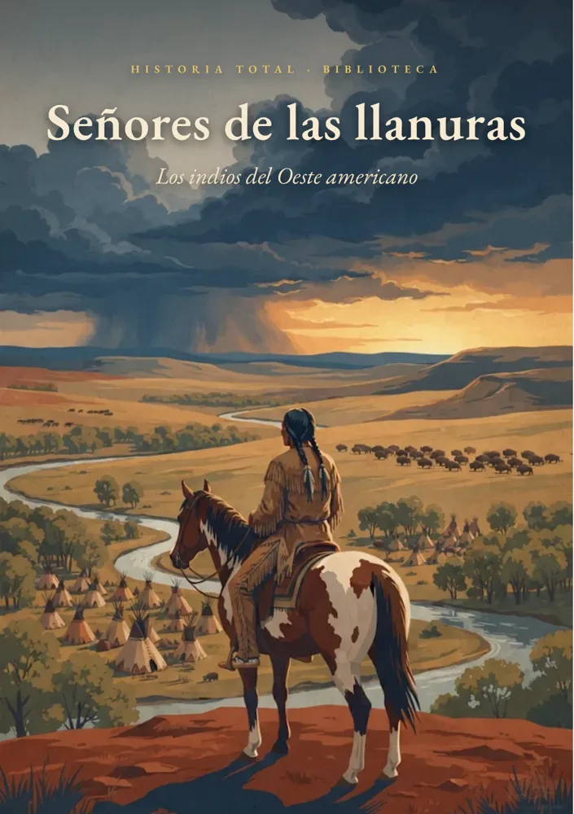
Introducción
Lo que nos contó el cine
Casi todos conocemos a los indios de las llanuras sin haber leído nada sobre ellos. Los hemos visto en cientos de películas: jinetes con plumas que cabalgan en círculo alrededor de una caravana, tipis junto a un río, un jefe que habla despacio, un fuerte asediado y un toque de corneta que anuncia la llegada de la caballería. Era una historia sencilla, con buenos y malos, contada casi siempre desde un lado.
Este libro quiere contarla entera. Y para eso hay que empezar mucho antes de lo que empiezan las películas, y terminar mucho después.
Por qué «señores de las llanuras»
Durante poco más de un siglo, entre mediados del siglo XVIII y la década de 1870, los pueblos jinetes fueron de verdad los señores de las Grandes Llanuras de Norteamérica: un territorio inmenso, tan grande como media Europa, donde ningún imperio europeo pudo imponerse. Los comanches tuvieron en jaque a España durante décadas. Los lakotas obligaron a los Estados Unidos a firmar un tratado en el que renunciaban a sus fuertes. En 1876 derrotaron al ejército más famoso del Oeste.
Pero ese señorío fue muy breve, y tenía algo de paradoja: se apoyaba en dos cosas que habían traído los europeos. El caballo, que llegó desde las haciendas españolas de México y Nuevo México. Y el fusil, que bajó desde los puestos de pieles franceses e ingleses del norte. Con ellos, pueblos que antes caminaban detrás de los bisontes con perros cargados de palos se convirtieron en algunos de los mejores jinetes del mundo. Y con la llegada de más europeos, de sus enfermedades, de sus ferrocarriles y de sus cazadores, ese mundo se vino abajo en una sola generación.
Lo que se cuenta en este libro
Los doce capítulos siguen el orden del tiempo. Empiezan antes de la llegada del caballo, cuando en las llanuras convivían cazadores a pie y aldeas de agricultores junto a los ríos. Siguen con la llegada de los españoles a Nuevo México y con la revuelta que los expulsó en 1680; con la revolución que trajeron el caballo y el fusil; con el imperio comanche y su larga guerra, y su paz, con España; y con los cuarenta años en que el corazón del continente, desde San Luis hasta las aldeas de los mandanes, perteneció a la Corona española.
Después llega el momento de esplendor de los pueblos jinetes. Y luego, capítulo a capítulo, su destrucción: las epidemias, las expulsiones, la fiebre del oro, las matanzas, la batalla de Little Bighorn, el exterminio del bisonte, la rendición de los últimos jefes, Wounded Knee, las reservas y los internados. El último capítulo llega hasta hoy.
Hay en este libro mucha historia de España que en España apenas se conoce. Los caballos de los indios de las películas descendían de caballos españoles; palabras como mustang, rodeo o lazo vienen del castellano; un gobernador español firmó con los comanches una de las paces más duraderas de toda la frontera, y un mapa hecho para el rey de España guio a Lewis y Clark en su famoso viaje. Pero también hay páginas oscuras de nuestra historia, como el castigo de Acoma o el trabajo forzado en las misiones, y se cuentan igual que las demás.
Una advertencia
Esta no es una historia amable. Se ha procurado contarla con hechos, nombres, fechas y cifras comprobadas en las fuentes, y sin rebajar lo que ocurrió. Cuando las cifras son dudosas, se dice; cuando los historiadores discuten algo, también. Las escenas de las láminas son recreaciones artísticas, pero lo que se cuenta en el texto no lo es.
Tampoco es una historia de buenos y malos. Los pueblos de las llanuras hicieron la guerra entre sí, tomaron cautivos y expulsaron a otros pueblos de sus tierras, como han hecho casi todos los pueblos de la historia. Pero lo que les ocurrió a partir del siglo XIX no fue una guerra entre iguales. Fue la destrucción deliberada de una forma de vida, y en algunos lugares, como California, de pueblos enteros. Hoy lo reconocen los propios gobiernos de los Estados Unidos.
Sobre las palabras
En este libro se habla de indios, porque así los llamaron siempre en castellano y porque muchos de ellos siguen usando esa palabra para sí mismos, aunque hoy también se dice nativos americanos o pueblos indígenas. Siempre que se puede se usa el nombre de cada pueblo: lakotas, cheyenes, comanches, mandanes, apaches. Muchos de esos nombres se los pusieron otros, a veces sus enemigos; donde se conoce, se cuenta también cómo se llamaban ellos.
Los nombres de los jefes se dan traducidos cuando la traducción es la habitual en castellano, como Toro Sentado, Caballo Loco o Nube Roja.
Al final de cada capítulo hay una línea de tiempo con las fechas principales y un mapa, con un pequeño mapa de Norteamérica en la esquina para saber dónde estamos.
Y ahora, empecemos por el principio: por un mar de hierba donde todavía no había caballos.
Antes del caballo
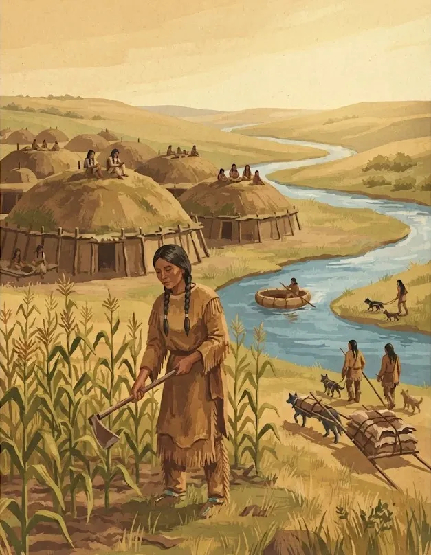
Hubo un tiempo en que las Grandes Llanuras no conocían el caballo. Sus pueblos caminaban detrás de los bisontes con perros cargados de palos, o vivían en aldeas de tierra junto a los ríos, sembrando maíz. Era un mundo antiguo, que funcionaba desde hacía miles de años. Estaba a punto de cambiar para siempre.
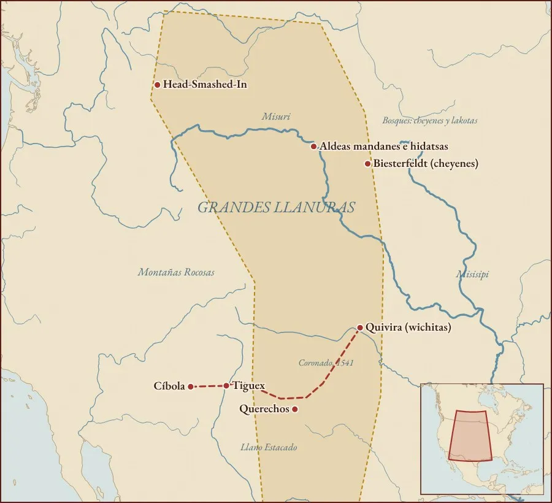
Un mar de hierba
En el centro de Norteamérica hay una llanura tan grande que cuesta imaginarla. Empieza en los bosques del Misisipi y termina, más de mil kilómetros al oeste, al pie de las Montañas Rocosas. Por el norte entra en Canadá y por el sur llega hasta Texas. Son las Grandes Llanuras: un mar de hierba casi sin árboles, con veranos de calor seco, inviernos de ventiscas heladas y un cielo que parece no acabar nunca.
Los ríos la cruzan de oeste a este, como el Misuri, el Platte o el Arkansas, y en sus orillas crecen álamos y sauces. Lejos del agua solo hay hierba, y en esa hierba vivía el gran animal de esta historia: el bisonte. Nadie sabe cuántos había. Los cálculos hablan de decenas de millones, en manadas que tardaban días en pasar delante de un viajero.
El bisonte daba casi todo lo necesario para vivir: carne fresca y seca, pieles para vestirse y cubrir las tiendas, tendones para coser, huesos para hacer herramientas, cuernos para cucharas y estiércol seco para encender fuego donde no había leña. Pero cazarlo a pie era difícil y peligroso. Un bisonte macho puede pesar casi una tonelada y correr más deprisa que un caballo durante un trecho corto.
Los tiempos de los perros
Los pueblos de las llanuras recordarían más tarde aquella época con un nombre curioso: los tiempos de los perros. No tenían caballos, ni bueyes, ni ruedas. Su único animal de carga era el perro.
Para que un perro llevara peso inventaron el travois: dos palos atados sobre su lomo que se arrastraban por el suelo formando una V, con una pequeña plataforma de cuero en medio. Encima iban la carne seca, las pieles y los palos de la tienda. Un perro no podía llevar mucho, así que las familias tenían muchos perros y viajaban ligeras. Las tiendas eran pequeñas y las mudanzas, cortas.
Los primeros europeos que lo vieron fueron españoles. En 1541, el ejército de Francisco Vázquez de Coronado, que había salido de México en busca de ciudades de oro, cruzó el Llano Estacado, entre los actuales Nuevo México y Texas. Allí encontró a unos cazadores a los que llamó querechos, probablemente antepasados de los apaches. Los cronistas de la expedición contaron que vivían en tiendas hechas con pieles curtidas de «vacas», que así llamaban a los bisontes, y que se desplazaban con «recuas de perros cargados de palos». Les sorprendió que secaran la carne al sol, la molieran y la guardaran para el camino.
Los soldados no lo sabían, pero estaban viendo una forma de vida que pronto iban a cambiar ellos mismos sin querer. Traían caballos.
La trampa del acantilado
Sin caballos, la mejor forma de cazar muchos bisontes a la vez era el engaño. Los cazadores aprovechaban una costumbre de las manadas: cuando se asustan, corren todas juntas y siguen a las que van delante sin mirar adónde.
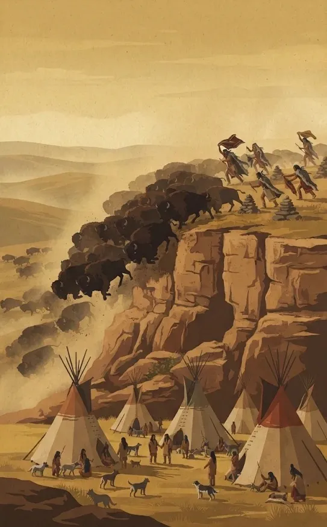
El lugar más famoso donde se usó esta trampa está hoy en Canadá, en la provincia de Alberta, y tiene un nombre que asusta: Head-Smashed-In, «cabeza aplastada». Según la tradición de los pies negros, un joven quiso ver de cerca cómo caían los bisontes, se puso debajo del acantilado y murió aplastado bajo la avalancha de animales.
La trampa funcionaba así. Durante días, algunos cazadores atraían a una manada hacia una zona de pastos altos. Desde allí, la llevaban por unos pasillos marcados con más de quinientos montones de piedras que empezaban a unos diez kilómetros del precipicio. Detrás de cada montón se escondía gente que, en el momento justo, agitaba mantas o gritaba para que los animales no se salieran del camino. Al final, la manada lanzada al galope llegaba a un acantilado de diez a dieciocho metros y caía por él. Abajo esperaba el campamento, donde se despiezaban los animales y se preparaba la carne para todo el invierno.
Este lugar se usó durante unos 5.500 años, desde hace más de cinco milenios hasta mediados del siglo XIX. Al pie del acantilado, los huesos acumulados llegan en algunos puntos a once metros de profundidad. En 1981 la UNESCO lo declaró Patrimonio de la Humanidad.
Los pueblos del maíz
No todos los habitantes de las llanuras eran cazadores nómadas. A lo largo del Misuri, en los actuales estados de Dakota del Norte y Dakota del Sur, vivían pueblos agricultores con aldeas permanentes. Los más conocidos son los mandanes, los hidatsas y los arikaras.
Sus casas eran las casas de tierra: grandes cabañas redondas, con un armazón de troncos cubierto de ramas, hierba y una gruesa capa de tierra. Por dentro podían medir más de doce metros de ancho y acoger a una familia numerosa, con sus perros y, más tarde, hasta con algún caballo en los días más fríos. El techo era tan sólido que la gente se sentaba encima a charlar, mirar el río o vigilar los campos. Las aldeas se protegían con empalizadas y fosos, y algunas tenían más de cien casas.
El trabajo del campo era cosa de las mujeres. Ellas sembraban en las vegas del río maíz, judías, calabazas y girasoles, cuidaban los campos durante el verano y guardaban la cosecha en fosas bajo tierra. Las semillas se heredaban de madres a hijas, y cada familia tenía sus propias variedades de maíz, adaptadas a un verano corto y a las heladas tempranas. Los hombres cazaban bisontes en expediciones de varias semanas y defendían la aldea. Para cruzar el río usaban unas barcas redondas, hechas con una piel de bisonte tensada sobre un armazón de ramas, que parecían grandes cuencos flotantes.
Gracias a su maíz, estas aldeas se convirtieron en el gran mercado de las llanuras. Los cazadores nómadas venían cada verano a cambiar carne seca y pieles por grano. Las aldeas del río Knife, de los hidatsas, ya existían hacia el año 1600 y llegarían a ser uno de los lugares de comercio más importantes de Norteamérica. Por esos mercados pasarían, primero, conchas y piedras de lugares lejanos, y después objetos que nadie allí sabía fabricar: cuchillos de hierro, ollas de cobre, fusiles… y caballos.
Quivira, la ciudad que no era de oro
La expedición de Coronado tuvo además un final que sirve para conocer a otro pueblo agricultor. Un guía al que los españoles llamaban el Turco les había prometido un reino riquísimo llamado Quivira, donde, decía, hasta los platos eran de oro. Coronado lo siguió durante semanas por las llanuras.
En el verano de 1541 llegó por fin a Quivira, en el actual Kansas. No encontró oro. Encontró las aldeas de los wichitas: casas altas en forma de colmena, cubiertas de hierba, rodeadas de campos de maíz, judías y calabazas. Era gente próspera, que comerciaba con sus vecinos y cazaba bisontes en otoño, pero vivía sin metales preciosos. El Turco confesó que había querido perder al ejército en las llanuras y fue ejecutado. Coronado volvió a México convencido de que su viaje había sido un fracaso.
No lo fue del todo. Las crónicas de aquella expedición son la primera descripción escrita de las Grandes Llanuras y de sus pueblos, tal como eran antes de que todo cambiara.
Los que aún vivían en los bosques
Muchos de los pueblos que hoy asociamos con las llanuras ni siquiera vivían allí en tiempos de Coronado.
Los cheyenes eran entonces un pueblo de los bosques y lagos de la actual Minnesota, que pescaba, cazaba y sembraba maíz. Poco a poco se desplazaron hacia el oeste. Hacia 1724 algunos de ellos vivían en una aldea junto al río Sheyenne, en Dakota del Norte, que los arqueólogos llaman Biesterfeldt: unas setenta casas de tierra, una plaza en el centro y campos de maíz, igual que las de los mandanes. Hacia el final de ese siglo la aldea fue atacada e incendiada, y sus habitantes se marcharon más allá del Misuri.
Algo parecido les ocurrió a los lakotas, la rama occidental de los pueblos que los franceses llamaban sioux. Vivían en los bosques de Minnesota, entre lagos donde recogían arroz salvaje, y cazaban ciervos y bisontes en el borde de la pradera. Sus vecinos del este, los ojibwas, conseguían fusiles de los comerciantes franceses de pieles, y con ellos empujaron a lakotas y cheyenes hacia el oeste.
Así, mientras desde el sur avanzaba un animal nuevo que los españoles habían traído a América, desde el este avanzaban las armas de fuego. Cuando las dos cosas se encontraran en medio de las llanuras, nacería un mundo nuevo: el de los grandes jinetes del bisonte, el que conocemos por las películas. Un mundo deslumbrante, que duraría poco más de un siglo.
Línea de tiempo
El caballo que vino de España
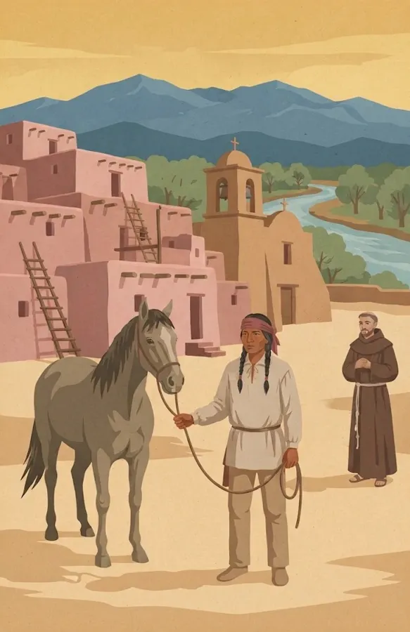
El caballo había nacido en América, pero se extinguió allí al final de la Edad de Hielo. Volvió miles de años después en los barcos españoles. Los conquistadores lo usaron para dominar; los pueblos indios aprendieron a robarlo, a criarlo y a montarlo mejor que nadie. Con él, y con una revuelta que expulsó a los españoles de Nuevo México, empezó un mundo nuevo.
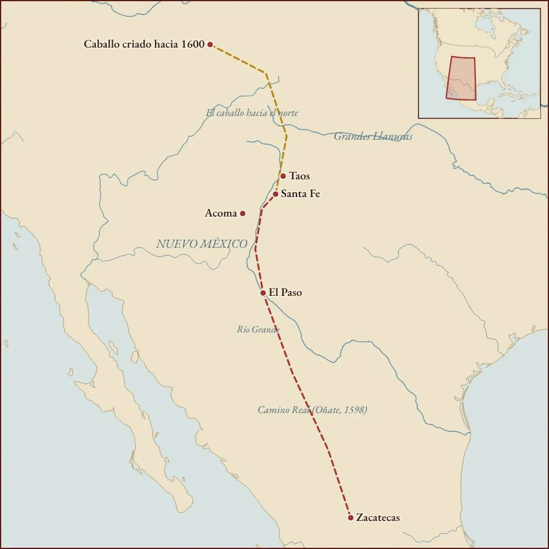
Un animal que volvía a casa
Pocas historias son tan curiosas como la del caballo en América. Los caballos aparecieron en las llanuras de Norteamérica hace millones de años, y desde allí cruzaron a Asia por el puente de tierra que unía los dos continentes durante las glaciaciones. Pero al final de la última Edad de Hielo, hace más de diez mil años, los caballos americanos se extinguieron, junto con los mamuts y otros grandes animales. Cuando los europeos llegaron, nadie en América había visto nunca uno.
Volvieron en los barcos de Cristóbal Colón, en su segundo viaje de 1493, y se criaron en las islas del Caribe. Desde allí pasaron al continente. En 1519, Hernán Cortés desembarcó en México con dieciséis caballos, y los guerreros mexicas, al verlos, no sabían si el jinete y el animal eran un solo ser. Durante la conquista, el caballo fue un arma tan poderosa como los cañones: daba velocidad, altura y miedo.
Los españoles lo sabían bien, y por eso las autoridades procuraron que los indios no tuvieran caballos ni aprendieran a montar. Pero era imposible impedirlo. Las haciendas del norte de México necesitaban pastores y vaqueros, y muchos de ellos eran indios. Aprendieron a domar, a herrar y a curar a los animales. Y algunos caballos se escapaban o eran robados, y se iban hacia el norte.
Oñate llega al río Grande
En 1598, un rico minero de Zacatecas llamado Juan de Oñate dirigió hacia el norte una gran expedición para fundar una nueva provincia: Nuevo México. Llevaba soldados con sus familias, frailes franciscanos, carretas y miles de cabezas de ganado: ovejas, vacas, cabras, mulas y caballos. Se instaló junto al río Grande, entre los pueblos que los españoles llamaban indios pueblo, porque vivían en aldeas de casas de adobe de varios pisos y cultivaban maíz con regadío.
La conquista fue dura desde el principio. A finales de 1598, en el pueblo de Acoma, construido sobre una meseta de roca, los vecinos se negaron a entregar comida y mantas a un grupo de soldados que entró en sus casas a llevárselas. Hubo pelea y murieron el capitán Juan de Zaldívar y once de sus hombres. Oñate ordenó un castigo ejemplar. En enero de 1599, su hermano Vicente asaltó la meseta con un pequeño cañón. Murieron unos ochocientos acomas, entre ellos unos trescientos mujeres y niños.
Después vino el juicio. Oñate condenó a los hombres de más de veinticinco años a que les cortaran el pie derecho y a veinte años de servidumbre; a los jóvenes y a las mujeres, a veinte años de servidumbre. A veinticuatro hombres se les aplicó la amputación. Las noticias llegaron a España y el rey Felipe III lo desterró de Nuevo México por su crueldad. La herida no se cerró: en 1998, cuando se cumplían cuatrocientos años de la fundación de Nuevo México, alguien cortó el pie derecho de la estatua ecuestre de Oñate que se había levantado en Alcalde.
Un siglo de miedo y hambre
Durante los ochenta años siguientes, Nuevo México fue una provincia pobre y lejana, a meses de viaje de la capital del virreinato. Para los indios pueblo, aquellos años fueron muy duros. Tenían que entregar maíz y mantas a los colonos, trabajar en sus campos y en sus casas, y obedecer a los frailes, que prohibieron sus ceremonias, destruyeron sus máscaras y objetos sagrados, y castigaron a quienes seguían practicando su religión. Los soldados y los colonos, además, capturaban apaches y otros indios de las llanuras para venderlos como esclavos en las minas del sur, aunque las leyes de la Corona lo prohibían.
En la década de 1670 llegó una sequía terrible. Las cosechas se perdieron, hubo hambre, y los apaches, también hambrientos, atacaban los pueblos para llevarse comida y ganado. En 1675, el gobernador mandó detener a cuarenta y siete curanderos y sacerdotes indígenas acusados de brujería. Cuatro fueron condenados a muerte y los demás, azotados. Uno de los liberados se llamaba Popé.
Cuerdas con nudos
Popé se escondió en el pueblo de Taos, en el norte, y durante cinco años preparó en secreto algo que nunca había ocurrido: que todos los pueblos, que hablaban lenguas distintas y a menudo estaban enfrentados, se levantaran a la vez.
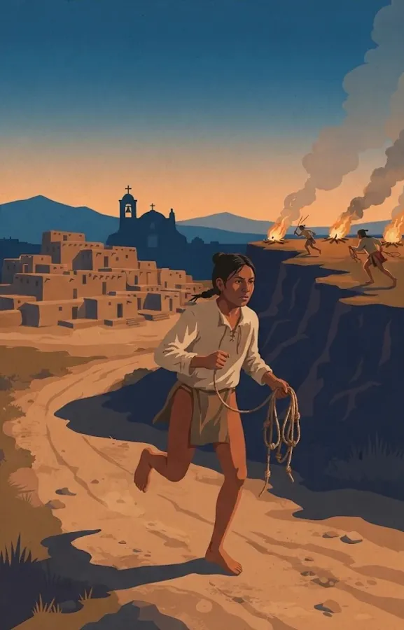
Para coordinarlos envió corredores con cuerdas de nudos. Cada pueblo debía deshacer un nudo cada mañana; cuando no quedara ninguno, sería el día. Los españoles capturaron a dos de los mensajeros y los torturaron hasta que contaron el plan, así que Popé adelantó la fecha. El 10 de agosto de 1680, los pueblos se rebelaron al mismo tiempo en todo Nuevo México.
Fue la mayor derrota de España en la frontera norte. Murieron unos cuatrocientos colonos y soldados, y veintiuno de los treinta y tres frailes franciscanos de la provincia. Las iglesias fueron quemadas. Los supervivientes se refugiaron en Santa Fe, que los rebeldes sitiaron y dejaron sin agua. El 21 de agosto, el gobernador Antonio de Otermín salió de la ciudad con todos los que quedaban y huyó hacia el sur. Casi dos mil personas, unas quinientas de ellas indios esclavos o sirvientes, llegaron a la zona de El Paso. Los españoles no volvieron hasta doce años después.
Muchos historiadores la llaman hoy la primera revolución americana, casi un siglo antes de la de las Trece Colonias.
Los caballos que se quedaron
Durante mucho tiempo se contó que la revuelta de 1680 fue el momento en que el caballo pasó a las llanuras: los españoles huyeron, sus rebaños quedaron atrás y los pueblos los cambiaron con sus vecinos apaches, utes y comanches.
Es verdad que la revuelta dejó miles de animales en manos indias. Pero en 2023, un equipo internacional de arqueólogos y científicos, en el que participaron investigadores de pueblos indígenas, publicó en la revista Science un estudio sobre restos de caballos encontrados en Kansas, Nuevo México, Wyoming e Idaho. Los análisis mostraron que algunos de esos caballos vivieron ya a finales del siglo XVI o principios del XVII, antes incluso de que Oñate llegara a Nuevo México. Tenían huellas en los dientes y en los huesos de haber llevado bridas, y uno de ellos había comido maíz, lo que indica que alguien lo criaba y lo alimentaba.
Es decir: los caballos llegaron a los pueblos de las llanuras antes que los propios españoles, de mano en mano, a través de las rutas de comercio que salían de México. Y los indios no se limitaron a robarlos o a recogerlos: los criaron y los cuidaron desde muy pronto. La revuelta de 1680 aceleró algo que ya había empezado.
Mesteños
En las llanuras, los caballos encontraron un paraíso: hierba sin fin y pocos enemigos naturales. Los que escapaban formaban manadas salvajes, que crecían cada año. Los españoles los llamaban mesteños, porque no tenían dueño y pertenecían a la Mesta, la vieja asociación de ganaderos de Castilla. De esa palabra viene el inglés mustang.
No fue la única herencia. Los vaqueros de Nuevo México y Texas enseñaron un oficio entero, y con él su vocabulario: rancho, rodeo, lazo (en inglés lasso), corral, sombrero… e incluso vaquero, que en el inglés del Oeste acabó convertido en buckaroo. Las sillas de montar, las bridas y la forma de domar de los indios de las llanuras también debían mucho a lo que habían visto hacer a los españoles.
En 1692, el nuevo gobernador Diego de Vargas volvió a Nuevo México. La reconquista costó años de combates, pero cuando terminó las relaciones fueron distintas: los frailes fueron más tolerantes con las ceremonias de los pueblos, y españoles e indios pueblo acabaron luchando juntos contra un enemigo común. Ese enemigo venía de las llanuras, y montaba a caballo como nadie lo había hecho jamás.
Línea de tiempo
La revolución del caballo y el fusil
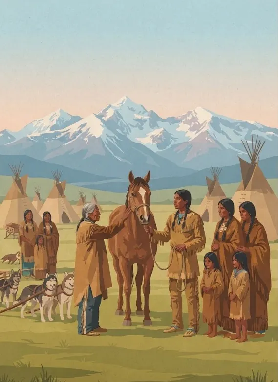
En menos de un siglo, el caballo subió desde Nuevo México hasta Canadá, y el fusil bajó desde los puestos de pieles del norte. Donde se encontraron, los pueblos de las llanuras cambiaron por completo: se hicieron más ricos, más libres y más poderosos, pero también más desiguales y más guerreros. Hasta España, que lo vio desde lejos, pagó en 1720 el precio de ese mundo nuevo.
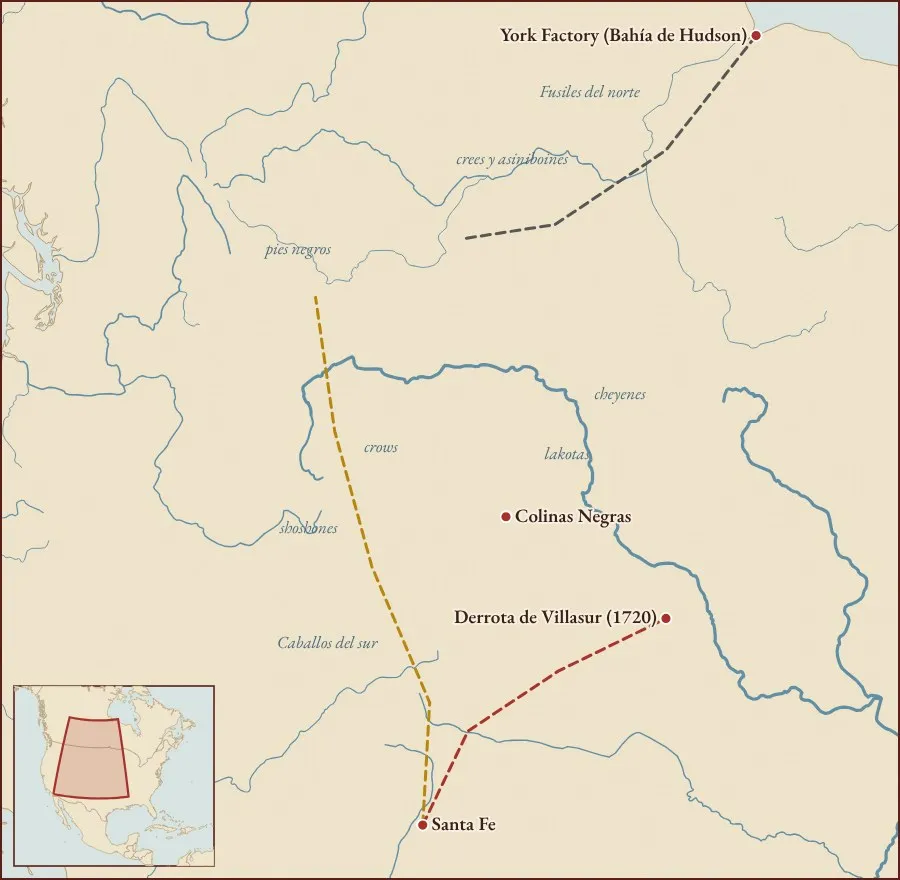
El perro sagrado
Cuando los pueblos de las llanuras vieron por primera vez un caballo, buscaron una palabra para un animal que no se parecía a nada que conocieran. Casi todos pensaron en el único animal de carga que tenían: el perro. Los crees y los asiniboines lo llamaron «perro grande». Los pies negros, «perro alce», porque era tan alto como un alce. Los lakotas lo llamaron sunka wakan, «perro sagrado» o «perro misterioso».
El caballo viajó hacia el norte de mano en mano, por las rutas de comercio y por el robo, que entre aquellos pueblos era una hazaña y no una vergüenza. Desde Nuevo México pasó a los apaches, a los utes y a los comanches; de ellos, a los shoshones de las montañas; y de los shoshones, a los pueblos de las llanuras del norte. A comienzos del siglo XVIII ya había jinetes en Wyoming y en Montana, y hacia mediados de siglo los caballos habían llegado a lo que hoy es Canadá.
Un anciano de los pies negros llamado Saukamappee se lo contó en el invierno de 1787 a un joven explorador inglés, David Thompson, que pasó cuatro meses en su tienda. Recordaba cómo, siendo muchacho, los shoshones aparecían montados en aquellos animales y arrollaban a los pies negros, que luchaban a pie. Recordaba también el primer caballo que vieron de cerca: uno muerto por una flecha, alrededor del cual se juntó todo el campamento para mirarlo y tocarlo, sin saber muy bien qué era.
Fusiles del norte
Mientras el caballo subía desde el sur, otra cosa bajaba desde el norte y el este: las armas de fuego.
En la bahía de Hudson, los comerciantes ingleses de la Compañía de la Bahía de Hudson, fundada en 1670, cambiaban fusiles, pólvora, balas, cuchillos y ollas por pieles de castor. Por los Grandes Lagos y el Misisipi hacían lo mismo los comerciantes franceses. Ni unos ni otros tenían inconveniente en vender armas a los indios; al contrario, cuantas más pieles traían, más fusiles recibían. Los españoles, en cambio, prohibían venderlas, por miedo a que se volvieran contra ellos.
Los pueblos más cercanos a los puestos, como los crees y los asiniboines, se convirtieron en intermediarios y se armaron antes que nadie. Con los fusiles empujaron a sus vecinos hacia el oeste. Saukamappee lo contó también: la primera vez que los pies negros llevaron a la batalla unos pocos fusiles, los shoshones, que tenían caballos pero no armas de fuego, huyeron aterrados al ver caer a sus guerreros sin saber qué los había herido.
Los primeros fusiles eran pesados, lentos de cargar y poco útiles a caballo; para cazar bisontes al galope, el arco seguía siendo mejor. Pero en la guerra daban miedo y ventaja. Y así, en el centro de las llanuras, se encontraron dos fronteras: la del caballo, que venía de España, y la del fusil, que venía de Francia e Inglaterra. Los pueblos que consiguieron las dos cosas a la vez se convirtieron en los dueños de la pradera.
Los que dejaron el maíz
Para algunos pueblos, el caballo fue una invitación a cambiar de vida.
Los cheyenes, que en el siglo XVII sembraban maíz en Minnesota y luego en Dakota, abandonaron poco a poco sus aldeas de casas de tierra. Con caballos podían seguir a los bisontes todo el año, y la caza daba más que el campo. A finales del siglo XVIII ya eran nómadas que vivían en tipis. Algo parecido hicieron los crows, que se separaron de sus parientes agricultores, los hidatsas, para hacerse cazadores en las praderas de Montana.
Los lakotas salieron de los bosques de Minnesota empujados por los ojibwas y sus fusiles, cruzaron el Misuri y descubrieron que al oeste les esperaba una tierra inmensa, llena de bisontes y de caballos. Sus calendarios de invierno, unas pieles en las que cada año se pintaba un dibujo para recordar el suceso más importante, cuentan que hacia 1776, el mismo año en que las Trece Colonias declaraban su independencia, un jefe lakota llamado Toro de Pie llegó por primera vez a las Colinas Negras. Aquellas montañas oscuras, cubiertas de pinos, se convertirían en el centro de su mundo. Los lakotas las habían ganado, como tantas tierras de aquella época, expulsando a quienes vivían antes en ellas, como los kiowas y los crows.
No todos cambiaron. Los mandanes, los hidatsas, los arikaras, los pawnees y los wichitas siguieron siendo agricultores. También ellos tuvieron caballos y cazaban bisontes a caballo, pero no abandonaron sus aldeas ni sus campos de maíz. El caballo no hizo a todos iguales: hizo a unos nómadas y a otros más ricos en su sitio.
Una vida más grande
Con el caballo, la vida en las llanuras se agrandó. Un caballo podía arrastrar un travois mucho mayor que el de un perro, así que las tiendas se hicieron más altas y anchas, con palos más largos y más pieles. Las familias podían llevar más comida, más ropa, más objetos. Los campamentos se movían más lejos y más deprisa, y la caza del bisonte, que antes exigía semanas de engaños, se hacía ahora al galope, en una mañana.
Pero el caballo también trajo cosas nuevas que no eran todas buenas. La riqueza empezó a medirse en caballos, y unas familias tuvieron muchos y otras muy pocos. Para tener más, había que robárselos a los enemigos, y el robo de caballos se convirtió en el camino para que un joven ganara fama, se casara y llegara a ser alguien. Las guerras entre pueblos se hicieron más frecuentes. Y las mujeres, que en las aldeas agrícolas eran dueñas de los campos y de las casas, pasaron a trabajar sobre todo curtiendo las pieles de los bisontes que cazaban los hombres, en una vida en la que su poder era distinto.
Los historiadores lo llaman la cultura del caballo. Es la que conocemos por las películas: jinetes con plumas, tipis pintados, cacerías al galope. Lo que el cine casi nunca cuenta es que fue una cultura muy joven. Nació en el siglo XVIII y en apenas siglo y medio fue destruida.
La derrota de Villasur
España vigilaba las llanuras desde Santa Fe con preocupación. Los comerciantes franceses avanzaban desde Luisiana y el Misisipi, armaban a los indios y podían llegar algún día hasta Nuevo México. En 1720, España y Francia estaban en guerra en Europa, y el gobernador de Nuevo México decidió enviar una expedición hacia el noreste para averiguar hasta dónde habían llegado los franceses.
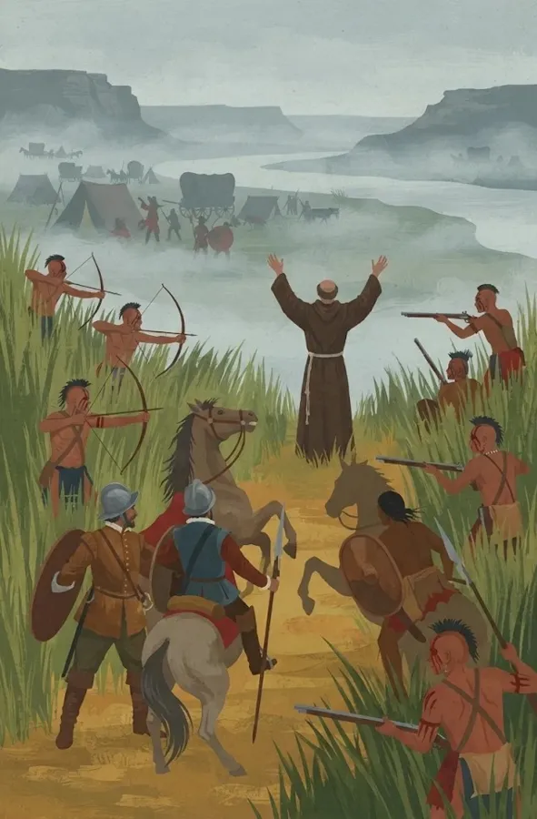
El 16 de junio de 1720 salió de Santa Fe el teniente general Pedro de Villasur con unos cuarenta soldados de cuera, llamados así por su armadura de cuero, sesenta o setenta indios pueblo aliados, un sacerdote, un comerciante y una docena de guías apaches. Recorrieron cientos de kilómetros hasta llegar al río Platte, en el actual Nebraska, en tierra de los pawnees.
Al amanecer del 14 de agosto, mientras el campamento se preparaba para partir, guerreros pawnees y otos lo atacaron por sorpresa. Algunos supervivientes contaron que había franceses entre ellos. En pocos minutos murieron Villasur, unos treinta y cinco soldados, el guía José Naranjo, varios indios pueblo y el intérprete. Solo unos pocos lograron escapar y volver a Santa Fe con la noticia.
Fue el final de los intentos españoles de controlar las llanuras centrales. Y dejó una huella extraordinaria: unos años después, alguien pintó la batalla sobre pieles de bisonte, con los soldados de cuera, los caballos, los pawnees con sus pinturas de guerra y hasta el sacerdote en el centro del combate. Esas pinturas, conocidas como pinturas de Segesser por el misionero suizo que las envió a su familia en 1758, se conservan hoy en el Museo de Historia de Nuevo México, en Santa Fe. Son la imagen más antigua que existe de una batalla en las Grandes Llanuras.
Línea de tiempo
Comanches contra España
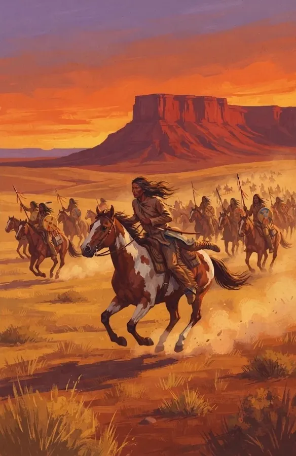
Un pueblo pequeño de las montañas bajó a las llanuras con los caballos que España había traído a América y, en pocas décadas, se convirtió en la mayor potencia del sur de las praderas. Durante casi un siglo, los comanches pusieron en jaque a la frontera española, la saquearon, comerciaron con ella y, al final, firmaron con ella una paz que duró una generación.
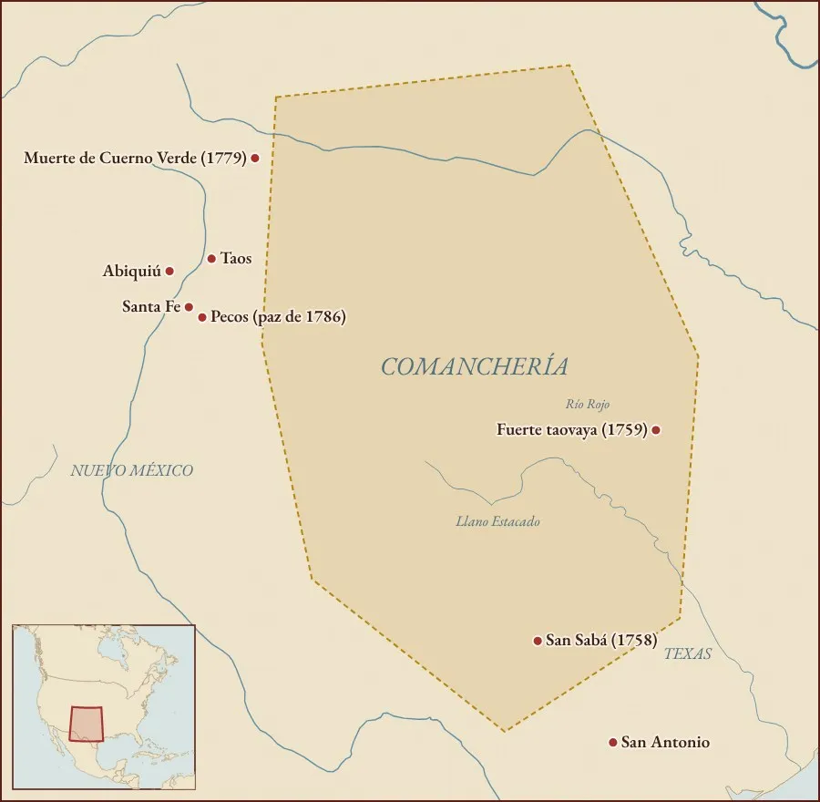
Del monte a la pradera
A finales del siglo XVII, los antepasados de los comanches eran una rama de los shoshones, un pueblo de cazadores y recolectores que vivía en las montañas y mesetas de lo que hoy es Wyoming. Eran pocos, pobres y vivían a pie. Se llamaban a sí mismos numunuu, «la gente». El nombre de comanches se lo dieron otros: viene de una palabra de los utes, sus primeros aliados, que significaba algo así como «los que siempre luchan contra nosotros».
Hacia 1700 consiguieron caballos y bajaron hacia el sur. Los documentos españoles los mencionan por primera vez en Nuevo México en 1706, cuando llegaron noticias de que comanches y utes preparaban un ataque contra Taos. En pocos años habían descubierto las llanuras del sur, entre los actuales Colorado, Kansas, Oklahoma y Texas: un territorio enorme, con millones de bisontes y pastos para criar caballos sin límite. Expulsaron de allí a los apaches, que tuvieron que replegarse hacia el sur y el oeste, y se quedaron con todo. Aquel territorio se llamaría la Comanchería.
Un imperio a caballo
Ningún pueblo de las llanuras dominó el caballo como los comanches. Los niños montaban antes de saber andar bien, y los guerreros eran capaces de colgarse del costado del animal al galope, usando su cuerpo como escudo, y disparar flechas por debajo de su cuello. Cada familia tenía decenas de caballos, y las más ricas, cientos. Los comanches criaban, domaban, robaban y vendían caballos a pueblos de toda Norteamérica, y llegaron a tener una de las mayores manadas del continente.
No eran un reino con un rey. Estaban divididos en grupos, cada uno con sus propios jefes, que se reunían en consejo para las grandes decisiones. Pero juntos controlaban el comercio del sur de las llanuras: caballos y mulas, pieles de bisonte, carne seca… y personas. Hoy algunos historiadores hablan de un imperio comanche, no porque conquistaran ciudades, sino porque durante un siglo fueron más poderosos que cualquiera de sus vecinos, incluidas las colonias europeas.
Ferias de Taos: comercio y cautivos
La relación con los españoles de Nuevo México fue siempre doble: guerra y comercio a la vez. Cada verano, los comanches acudían a la feria de Taos, donde cambiaban pieles, carne y caballos por cuchillos, puntas de metal, maíz, tejidos y, en ocasiones, armas compradas a los franceses de contrabando. Pocos meses después, los mismos grupos podían atacar los pueblos y ranchos españoles para llevarse ganado.
En aquellas ferias también se vendían personas. Los comanches, como los utes y otros pueblos, capturaban en sus guerras a mujeres y niños de otros pueblos indios, y también de los colonos españoles. En 1760, por ejemplo, un ataque comanche cerca de Taos se llevó a unas cincuenta mujeres y niños. Muchos cautivos eran luego vendidos en las ferias. Los españoles compraban sobre todo niños indios: la Iglesia lo llamaba «rescate», porque los bautizaba y los educaba como cristianos, pero en la práctica esos niños trabajaban como criados durante diez o veinte años para pagar lo que habían costado.
Cuando crecían, estos antiguos cautivos, separados para siempre de sus pueblos, formaban un grupo propio: los genízaros. Hablaban castellano, eran católicos, pero no eran considerados españoles. Las autoridades los instalaron en pueblos de la frontera, como Abiquiú o Belén, donde servían de muralla viva contra los ataques. A finales del siglo XVIII, quizá hasta un tercio de la población de Nuevo México era de origen genízaro. En 2007, el estado de Nuevo México los reconoció oficialmente como pueblo indígena, y sus descendientes viven allí todavía.
La misión de San Sabá
En Texas, la frontera española avanzaba con misiones y presidios. En 1757 se fundó la misión de Santa Cruz de San Sabá, en el centro de Texas, para convertir a los apaches lipanes, que la habían pedido. En realidad, los apaches buscaban la protección española contra los comanches, y ninguno llegó a instalarse en ella. Para los comanches, aquella misión solo significaba una cosa: que los españoles se habían aliado con su peor enemigo.
El 16 de marzo de 1758, unos dos mil guerreros comanches y de otros pueblos aliados, la mitad de ellos con fusiles franceses, rodearon la misión. Los dejaron entrar pensando que venían en paz. Murieron ocho personas, entre ellas el fraile Alonso Giraldo de Terreros, y la misión fue quemada.
Al año siguiente, el coronel Diego Ortiz Parrilla marchó hacia el norte con unos quinientos soldados y aliados apaches para castigarlos. En el río Rojo encontró una aldea de los taovayas, parientes de los wichitas, fortificada con empalizada y foso, defendida por comanches y taovayas armados con fusiles… y con una bandera francesa ondeando encima. Los españoles atacaron, sufrieron muchas bajas y tuvieron que retirarse, abandonando dos cañones. Era la primera vez que un ejército español era derrotado así en las llanuras por pueblos indios armados al estilo europeo.
Cuerno Verde
En la década de 1770, los ataques comanches contra Nuevo México fueron tan graves que la provincia parecía a punto de despoblarse. Ranchos y aldeas quedaban abandonados, y el ganado desaparecía. El jefe más temido era un guerrero al que los españoles llamaban Cuerno Verde, por el tocado con un cuerno pintado de verde que llevaba en la batalla. Su padre había muerto luchando contra los españoles, y él había jurado vengarlo.
En 1778 llegó como gobernador Juan Bautista de Anza, un militar nacido en la frontera de Sonora que ya había abierto el camino por tierra hasta California. Anza decidió algo nuevo: en lugar de esperar los ataques, ir a buscar a los comanches a su territorio. En agosto de 1779 salió de Santa Fe con unos seiscientos hombres, entre soldados, milicianos e indios pueblo, a los que se sumaron cerca de doscientos utes y apaches. Marchó hacia el norte por el oeste de las montañas, para no ser visto, y cayó sobre los comanches por sorpresa. A comienzos de septiembre, al pie de unas montañas del actual Colorado, mató a Cuerno Verde, a su hijo y a varios de sus jefes. Aquellas montañas se llaman todavía hoy Greenhorn, «cuerno verde».
La paz de Anza
Anza sabía que una victoria no bastaba. Los comanches eran demasiados, y la provincia no podía vivir en guerra para siempre. Así que, en lugar de seguir castigándolos, les ofreció algo que necesitaban: comercio seguro y un aliado contra los apaches.
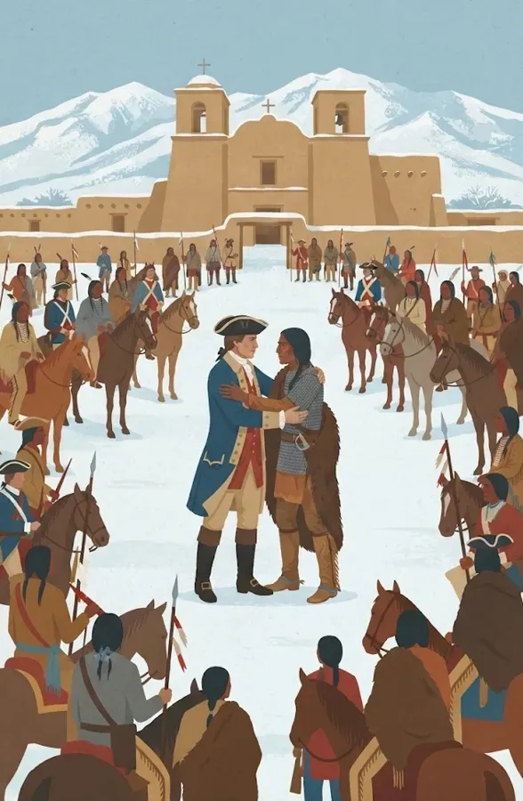
Los distintos grupos comanches eligieron como portavoz a un guerrero llamado Ecueracapa, «Camisa de Hierro». El 25 de febrero de 1786 entró en Santa Fe y se abrazó con Anza. Días después, en el pueblo de Pecos, ante unos doscientos jefes comanches, se cerró la paz. Los comanches podrían comerciar en Santa Fe, Pecos y Taos a precios justos; españoles y comanches lucharían juntos contra los apaches; y Anza consiguió además que comanches y utes, enemigos desde hacía décadas, hicieran también la paz entre ellos.
Fue uno de los acuerdos más duraderos de toda la historia de la frontera. Duró hasta la independencia de México, en 1821. Durante esos años, Nuevo México creció y se pobló, y comerciantes nuevomexicanos, los comancheros, empezaron a viajar a la Comanchería a comerciar. La paz no fue tan buena para todos: los apaches, perseguidos por españoles y comanches a la vez, sufrieron como nadie.
Cuando México se independizó, los acuerdos se rompieron y los comanches volvieron a atacar, ahora hacia el sur, llegando en sus incursiones hasta el corazón de México. Faltaba todavía medio siglo para que otro país, los Estados Unidos, se enfrentara a ellos. Lo haría de una forma muy distinta a la de Anza.
Línea de tiempo
España en el Misuri
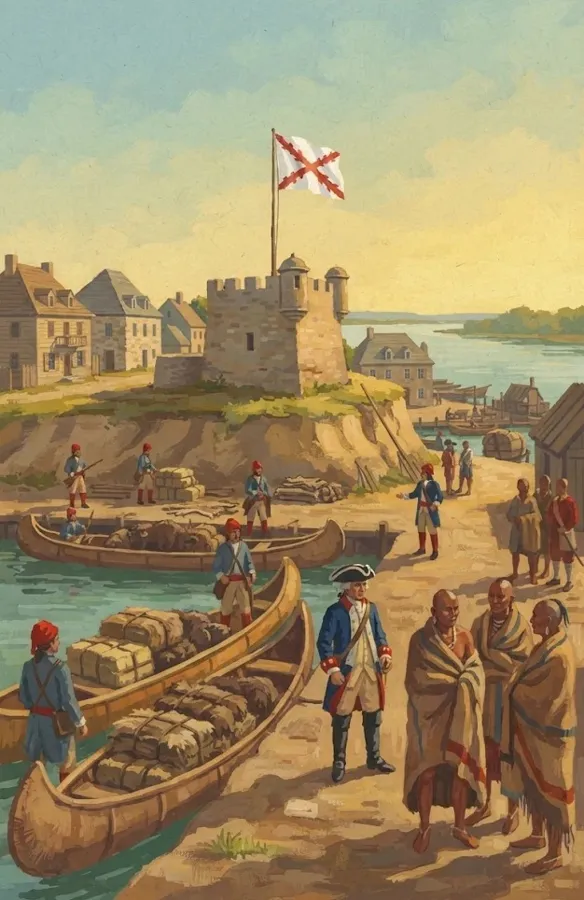
Durante cuarenta años, el corazón de Norteamérica fue español. Desde la ciudad de San Luis, a orillas del Misisipi, España intentó atraerse a los pueblos de las llanuras con medallas, banderas y comercio, y mandó exploradores Misuri arriba hasta las aldeas de los mandanes. Lo cuentan pocos libros: cuando Lewis y Clark iniciaron su famoso viaje, llevaban en la mochila un mapa hecho para el rey de España.
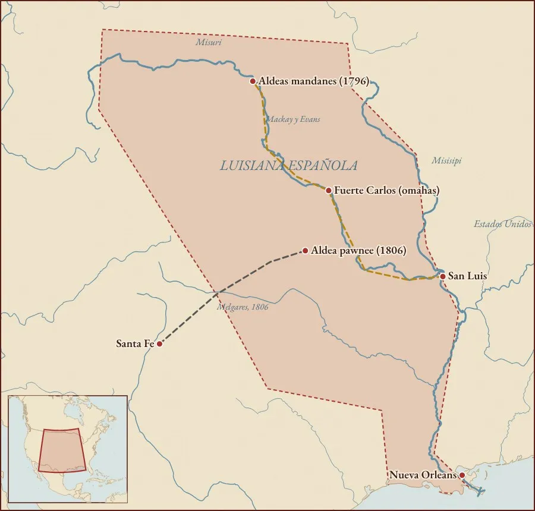
Un regalo envenenado
En 1762, en plena guerra de los Siete Años, Francia comprendió que iba a perder sus colonias en Norteamérica frente a Inglaterra. Para que al menos una parte no cayera en manos inglesas, entregó en secreto a su aliada España la Luisiana: un territorio inmenso, sin fronteras claras, que iba desde Nueva Orleans hasta las fuentes del Misuri. Al año siguiente, la paz de París repartió el resto: todo lo que había al este del Misisipi pasó a Inglaterra.
España recibió así un regalo enorme y difícil. La Luisiana le servía de muralla para proteger Nuevo México y Texas, y las minas de México, de los ingleses que avanzaban desde el este. Pero apenas tenía españoles para ocuparla. Los pocos pueblos de colonos que había eran franceses, y en las tierras del interior vivían decenas de pueblos indios que nunca habían oído hablar del rey de España.
San Luis de Ilinueses
En 1764, dos comerciantes franceses de pieles, Pierre Laclède y el joven Auguste Chouteau, fundaron un puesto de comercio en la orilla oeste del Misisipi, cerca de donde desemboca el Misuri. Lo llamaron Saint Louis en honor del rey de Francia. Pocos años después la ciudad pasó a manos españolas, y su nombre oficial se convirtió en San Luis de Ilinueses. Desde 1770 la gobernó un teniente de gobernador español, y en ella ondeó la bandera de España durante más de tres décadas.
Era un pueblo pequeño, de calles de tierra y casas de madera y piedra, donde casi todos hablaban francés. Pero por su muelle pasaba toda la riqueza del Misuri: pieles de castor, de nutria y de bisonte que bajaban en canoas desde el interior, y mercancías que subían para cambiarlas con los indios.
En mayo de 1780, durante la guerra de independencia de los Estados Unidos, en la que España luchaba contra Inglaterra, una fuerza dirigida por los ingleses y formada sobre todo por guerreros ojibwas, ho-chunks, menominis, potawatomis y dakotas atacó San Luis. El teniente de gobernador Fernando de Leyba, gravemente enfermo, organizó la defensa con unos trescientos hombres, en su mayoría milicianos franceses. Rechazaron el asalto, pero murieron veintiún vecinos y muchos otros fueron capturados en los campos de alrededor. Leyba murió poco después. Fue la única batalla de aquella guerra librada al oeste del Misisipi.
Medallas y banderas
España no tenía soldados suficientes para dominar la Luisiana por la fuerza, así que siguió el sistema francés: la diplomacia de los regalos. Cada año, los jefes de los pueblos aliados recibían en San Luis y en Nueva Orleans medallas de plata con el rostro del rey, banderas españolas, casacas de uniforme, armas, pólvora, mantas y tabaco. Los jefes que aceptaban una medalla se comprometían a ser «hijos» del rey de España, a comerciar con sus súbditos y a no recibir a los ingleses.
No era una amistad desinteresada. A España le interesaba que los pueblos del Misuri, como los osages, los pawnees, los otos o los omahas, sirvieran de barrera frente a los comerciantes ingleses que bajaban desde Canadá. Y a esos pueblos les interesaban las mercancías europeas, sobre todo las armas. Los osages, el pueblo más poderoso del bajo Misuri, aprovecharon esa situación para enriquecerse, y durante años atacaron a otros pueblos y a los propios colonos sin que España pudiera castigarlos.
Misuri arriba
En la década de 1790, los gobernadores españoles se alarmaron: comerciantes ingleses de Canadá llegaban ya a las aldeas de los mandanes, en el alto Misuri, y amenazaban con quedarse con todo el comercio de la región. En 1794, un grupo de comerciantes de San Luis, con el apoyo del gobierno, fundó la Compañía de Exploradores del Alto Misuri. Su objetivo era subir por el río, ganarse a los pueblos indios para España y, si era posible, encontrar un camino hasta el océano Pacífico.
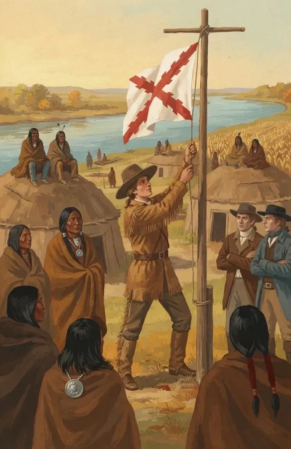
La compañía envió varias expediciones. La más importante la dirigió un escocés al servicio de España, James Mackay. Con él iba un joven galés, John Evans, que había viajado a América buscando una leyenda: la de un pueblo de indios de piel clara que, según se decía, hablaba galés y descendía de un príncipe medieval. Mackay subió por el Misuri en 1795 y construyó un fuerte entre los omahas, en el actual Nebraska. Desde allí, Evans siguió río arriba con unos pocos hombres.
El 23 de septiembre de 1796, Evans llegó a las aldeas de los mandanes, junto a la desembocadura del río Knife. Allí izó la bandera española sobre un puesto comercial, repartió medallas y regalos y ordenó a los comerciantes ingleses que se marcharan. Fue la primera y la última vez que ondeó una bandera de España en aquellas tierras. Evans no tenía soldados para hacer cumplir sus órdenes, los comerciantes ingleses volvieron enseguida y algunos mandanes, que preferían sus mercancías, llegaron a amenazarlo de muerte. En 1797 regresó a San Luis. No encontró a los indios galeses, porque nunca existieron.
Pero aquel viaje dejó algo muy valioso: un mapa del curso del Misuri, desde San Luis hasta las aldeas mandanes, dibujado por Mackay y Evans. Era el más exacto que se había hecho hasta entonces.
El mapa en la mochila
En 1800, Napoleón obligó a España a devolver la Luisiana a Francia, y en 1803 la vendió a los Estados Unidos por quince millones de dólares. Ningún pueblo indio fue consultado. Para los Estados Unidos, aquella compra duplicaba el tamaño del país. Para los pueblos que vivían allí, no cambiaba nada todavía, pero marcaba el principio del fin: un gobierno lejano consideraba ahora que sus tierras le pertenecían.
El 9 y el 10 de marzo de 1804, en San Luis, se arrió la bandera española, se izó la francesa durante un día y, después, la de los Estados Unidos. Los vecinos lo recordarían como el día de las tres banderas.
Pocas semanas después, el presidente Thomas Jefferson envió Misuri arriba la expedición de Meriwether Lewis y William Clark, que acabaría llegando al Pacífico. Entre los papeles que Jefferson les había enviado iba una copia del mapa de Mackay y Evans. Fue una de sus herramientas más útiles en la primera parte del viaje. Los exploradores más famosos de la historia de los Estados Unidos empezaron su camino guiándose por el trabajo de dos exploradores al servicio del rey de España.
España, que había perdido la Luisiana, intentó todavía frenarlos. Desde Santa Fe envió varias expediciones para interceptarlos. La mayor, en 1806, la dirigió el teniente Facundo Melgares con unos seiscientos hombres: recorrió las llanuras, visitó a los pawnees, les regaló medallas y banderas españolas y les pidió que no dejaran pasar a los norteamericanos. Nunca encontró a Lewis y Clark. Pero aquel mismo año, otro explorador norteamericano, Zebulon Pike, llegó a la aldea pawnee y encontró la bandera de España ondeando en ella. Pidió a los pawnees que la arriaran y pusieran la suya. Pocos meses después, Pike fue apresado por soldados españoles en el valle del río Grande, en el actual Colorado, y llevado preso a Chihuahua.
Fue el último pulso de España en las llanuras. Quince años después, México se independizó, y la frontera quedó frente a frente con un país joven y con prisa, que miraba hacia el oeste y no pensaba firmar la paz con nadie que se interpusiera en su camino.
Línea de tiempo
El bisonte lo es todo
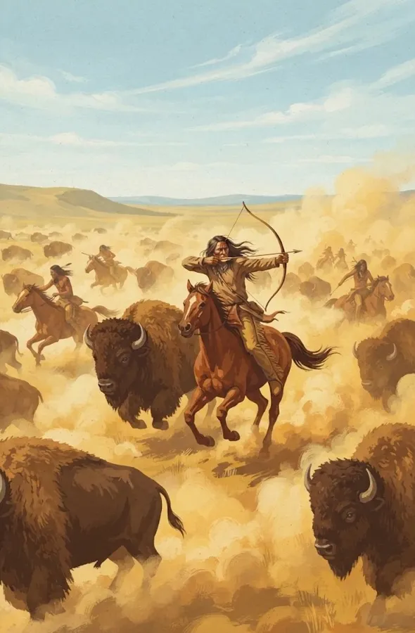
A comienzos del siglo XIX, los pueblos jinetes de las llanuras vivían su momento de mayor esplendor. Era una vida dura, en movimiento, organizada alrededor de un animal que lo daba todo y de unas tiendas que podían montarse en minutos. Tenía sus reglas, sus fiestas, sus guerras y sus desigualdades. Este capítulo cuenta cómo era, antes de que empezara a romperse.
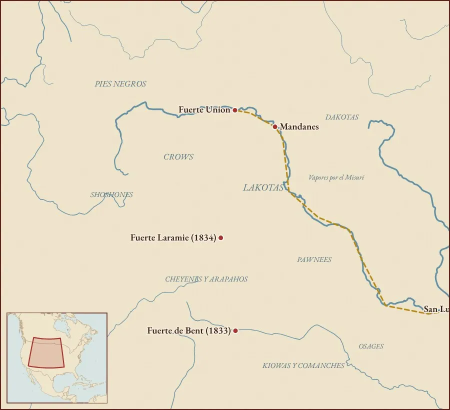
Una casa que se monta en una hora
La casa de los pueblos jinetes era el tipi: una tienda cónica de pieles de bisonte cosidas, sostenida por un armazón de largos palos de pino. Era perfecta para la vida en las llanuras. Su forma resistía los vientos más fuertes; en verano, levantando los bordes, dejaba pasar el aire; en invierno, con un forro interior y un fuego en el centro, mantenía el calor; y unas solapas en lo alto, que se movían con dos palos, servían de chimenea según soplara el viento.
El tipi era de las mujeres. Ellas curtían las pieles, las cosían, levantaban la tienda y la desmontaban, y eran sus dueñas. Para un tipi grande hacían falta entre diez y veinte pieles de bisonte, y semanas de trabajo. Un campamento entero podía recogerse y ponerse en marcha en menos de una hora: los palos se ataban a los costados de los caballos, formando el travois, y encima iban las pieles, la comida, los niños pequeños y los ancianos que no podían montar.
Por fuera, muchos tipis estaban pintados con figuras que contaban las hazañas del dueño o los sueños sagrados de la familia. Por dentro, cada cosa tenía su sitio: el lugar de honor, frente a la puerta, era para el cabeza de familia y los invitados; las mujeres se sentaban a un lado, los hombres al otro.
Todo se aprovechaba
La caza del bisonte a caballo era el gran momento del año. En verano, cuando las manadas se juntaban, todo el campamento se organizaba para una gran cacería. Nadie podía cazar por su cuenta: una sociedad de guerreros hacía de policía y castigaba a quien espantara la manada antes de tiempo, porque un solo error podía dejar a todos sin comida para el invierno. A una señal, los jinetes se lanzaban al galope entre los animales y los mataban con flechas o lanzas, cabalgando a su lado. Era peligroso: un caballo que tropezaba o un bisonte que embestía podían matar a un cazador.
Después empezaba el trabajo de las mujeres, que era enorme. La carne se comía fresca o se cortaba en tiras finas y se secaba al sol. Con carne seca machacada, grasa y bayas se hacía el pemmican, un alimento que se conservaba durante meses. Las pieles se raspaban, se curtían con los sesos del propio animal y se convertían en mantas, ropa, mocasines y tipis. Con el cuero crudo se hacían cuerdas, escudos, recipientes y unas grandes bolsas pintadas para guardar la comida. Los huesos servían de herramientas; los cuernos, de cucharas y vasos; los tendones, de hilo para coser y de cuerda para los arcos; la vejiga, de bolsa para el agua; y el estiércol seco, de combustible donde no había leña.
Por eso los pueblos de las llanuras no veían al bisonte solo como una presa. Era un pariente, un regalo del mundo sagrado, y había que tratarlo con respeto. Muchas ceremonias pedían que volviera cada año.
Hombres, mujeres y prestigio
La vida de un hombre giraba alrededor de la caza y la guerra. Pero la guerra en las llanuras no consistía sobre todo en matar enemigos. El mayor honor era tocar a un enemigo vivo con la mano o con un palo, sin herirlo, y escapar. Los franceses lo llamaron coup, «golpe», y los guerreros contaban sus golpes en público, como quien enseña medallas. También daba prestigio robar caballos del campamento enemigo o rescatar a un compañero herido.
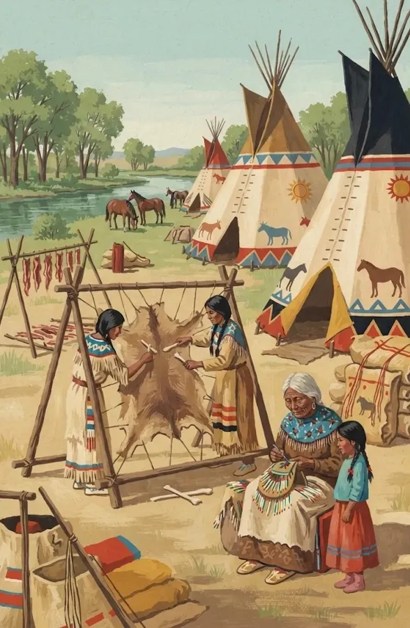
Los hombres se agrupaban en sociedades de guerreros, con sus propias canciones, sus insignias y sus normas. Entre los cheyenes, la más famosa fue la de los Soldados Perro, cuyos miembros más valientes llevaban una larga banda de cuero que clavaban en el suelo en mitad de la batalla: desde ese momento no podían retroceder hasta que un compañero la soltara.
Las mujeres tenían sus propios caminos para ganar prestigio. Las mejores bordadoras, que decoraban ropa y bolsas con púas de puercoespín teñidas y, más tarde, con cuentas de vidrio, formaban sociedades muy respetadas. Una mujer que había curtido muchas pieles o bordado muchas mantas era honrada como un guerrero que había contado muchos golpes. Pero su trabajo era agotador, y la riqueza en caballos que traía la caza hizo que algunos hombres tuvieran varias esposas, en parte porque hacían falta más manos para curtir.
La Danza del Sol
La gran ceremonia del año era la Danza del Sol, que celebraban en verano lakotas, cheyenes, pies negros, arapahos, kiowas y muchos otros pueblos. Durante varios días, todos los grupos de una nación se reunían en un gran campamento en círculo. En el centro se levantaba un árbol sagrado, elegido y cortado con ceremonias especiales.
Los danzantes, que habían hecho una promesa al mundo sagrado para pedir ayuda o dar las gracias, bailaban durante días sin comer ni beber, mirando al sol. Algunos, en la versión más dura, se clavaban en el pecho unas estacas de madera atadas con cuerdas al árbol y danzaban hasta que la piel se rompía. Era un sacrificio ofrecido por todo el pueblo. Los misioneros y el gobierno de los Estados Unidos lo consideraron una costumbre salvaje y acabaron prohibiéndolo en las reservas, a finales del siglo XIX. Los pueblos de las llanuras lo siguieron celebrando en secreto, y hoy vuelve a celebrarse.
Un mundo de muchos pueblos
Las llanuras no eran un territorio vacío ni un solo pueblo. Vivían allí decenas de naciones con lenguas tan distintas entre sí como el castellano y el chino. Para entenderse, inventaron una lengua de signos común, hecha con las manos, con la que un comanche podía negociar con un crow o un cheyene contar una historia a un kiowa.
Los lakotas formaban parte de una gran alianza que ellos llamaban los Siete Fuegos del Consejo, y eran el pueblo más numeroso de las llanuras del norte. Sus aliados eran los cheyenes y los arapahos. Sus enemigos, los crows, los pawnees, los shoshones y los pies negros, entre otros. Las guerras entre estos pueblos eran frecuentes y a veces muy crueles: se tomaban cabelleras, se capturaban mujeres y niños, se quemaban campamentos. No era un paraíso de paz. Era un mundo humano, con sus alianzas, sus odios y sus equilibrios.
Ese equilibrio, sin embargo, empezaba a estar amenazado. Por el Misuri subían cada año más barcos de vapor cargados de comerciantes, whisky y mercancías. Llegaron también pintores, como George Catlin en 1832 y Karl Bodmer en 1833, que retrataron a los jefes mandanes, lakotas y pies negros con un detalle extraordinario. Gracias a ellos sabemos cómo eran aquellas personas y aquellos pueblos en su momento de esplendor.
Llegaron justo a tiempo. Pocos años después, uno de esos barcos de vapor trajo algo mucho más mortífero que cualquier ejército.
Línea de tiempo
Viruela y destierro
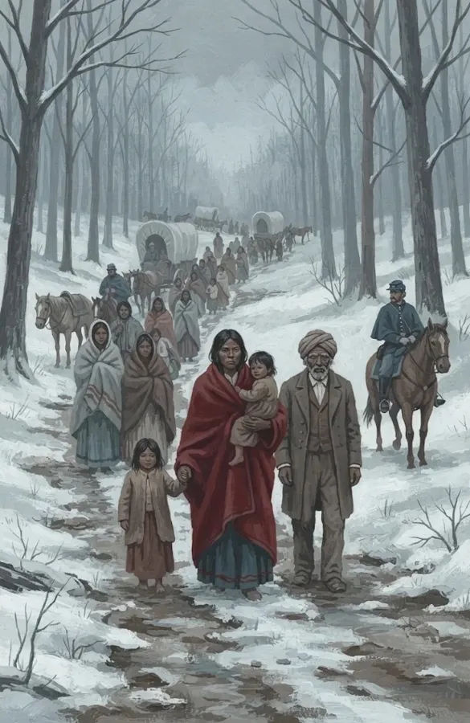
Ningún ejército mató tantos indios como la viruela. Llegó a las llanuras sin que nadie la viera, por los caminos del comercio, y en dos grandes oleadas, en 1781 y en 1837, vació aldeas enteras. Mientras tanto, en el Este, los Estados Unidos aprobaban una ley para expulsar a todos los pueblos indios al otro lado del Misisipi. Los que sobrevivieron al camino llegaron a las llanuras como desterrados.
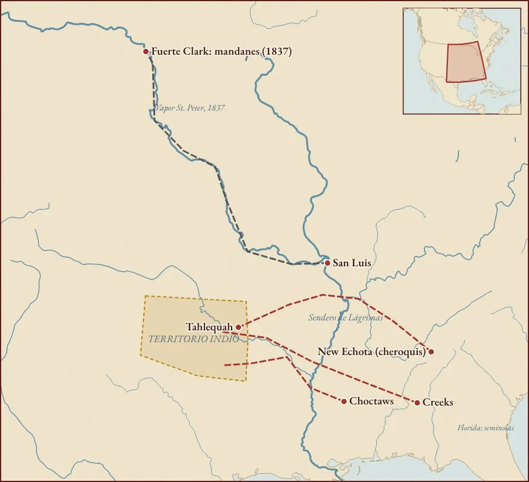
Un enemigo invisible
Antes de que llegaran los europeos, en América no existían la viruela, el sarampión, la gripe ni muchas otras enfermedades que en Europa, Asia y África llevaban miles de años matando y dejando, a la vez, a los supervivientes con defensas. Los pueblos americanos no tenían ninguna. Cuando estas enfermedades cruzaron el océano, se convirtieron en la mayor catástrofe de la historia del continente. Los historiadores discuten las cifras, pero coinciden en lo esencial: en los dos siglos siguientes a la llegada de Colón murió de epidemias una parte enorme de la población indígena de América, en muchos lugares la mayoría.
La viruela era la peor. Empezaba con fiebre y dolores; después, el cuerpo se cubría de pústulas. Mataba a muchos de los que enfermaban, y los que sobrevivían quedaban a menudo ciegos o con la cara marcada para siempre. Se contagiaba por el aire y por la ropa y las mantas de los enfermos. Y viajaba más deprisa que los propios europeos: muchas veces llegaba a un pueblo indio años antes que el primer blanco.
La gran viruela de 1781
En 1779 empezó una gran epidemia de viruela en la ciudad de México. Siguió los caminos del norte, llegó a Nuevo México, donde mató a miles de indios pueblo, y desde allí saltó a las llanuras por las rutas del comercio de caballos: de los comanches a los shoshones, de los shoshones a los pies negros y a los crows, y por el Misuri hasta las aldeas de los agricultores.
Las aldeas fueron las que más sufrieron, porque en ellas vivía mucha gente junta. Los arikaras, que según algunos cálculos tenían más de treinta aldeas, quedaron reducidos a unas pocas. Los mandanes perdieron tanta gente que tuvieron que abandonar sus pueblos del río Heart y unirse a sus vecinos hidatsas, más arriba. Más al norte, el anciano pie negro Saukamappee, el mismo que contó a David Thompson cómo llegaron los caballos, le contó también esto: que su gente atacó un campamento shoshone en el que solo encontraron muertos y moribundos; que se llevaron lo que había en las tiendas, y que días después la enfermedad estalló en su propio campamento y se extendió de tienda en tienda. Murió un tercio de su pueblo.
Aquella epidemia cambió el mapa de las llanuras. Los pueblos nómadas, que vivían más dispersos, se recuperaron antes. Los agricultores de las aldeas quedaron tan debilitados que ya no pudieron frenar a los lakotas, que avanzaron hacia el oeste cruzando el Misuri por las tierras que antes controlaban los arikaras.
¿Mantas infectadas?
Se ha contado muchas veces que los blancos repartían a propósito mantas infectadas de viruela entre los indios. Hay un caso documentado: en 1763, durante un asedio en el fuerte inglés de Fort Pitt, en Pensilvania, dos oficiales regalaron a unos enviados de los delawares dos mantas y un pañuelo sacados del hospital de variolosos, con la intención declarada de contagiarlos. Al mismo tiempo, el general inglés Jeffery Amherst sugería en sus cartas hacer exactamente eso. No se sabe si aquellas mantas causaron contagios, porque la viruela ya circulaba por la zona.
Fuera de ese caso, la mayoría de los historiadores piensa que las grandes epidemias de las llanuras no fueron provocadas a propósito. Lo que sí está documentado es algo casi igual de grave: el desinterés, la codicia y la falta de cuidado de quienes podían haberlas evitado.
El barco de 1837
En 1796, un médico inglés, Edward Jenner, había descubierto la vacuna contra la viruela. España organizó entre 1803 y 1806 la Expedición Balmis, que llevó la vacuna por todo su imperio, de América a Filipinas, en los brazos de unos niños huérfanos. En 1832, el Congreso de los Estados Unidos aprobó una ley para vacunar a los indios. Pero el dinero fue poco, los médicos pocos, y el secretario de Guerra decidió que no subieran por el Misuri más allá de los arikaras. Los pueblos del alto Misuri se quedaron sin vacunar.
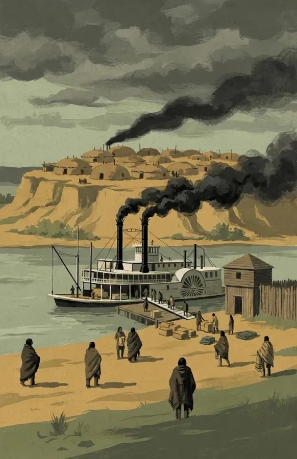
En la primavera de 1837, el barco de vapor St. Peter, de la American Fur Company, la gran compañía peletera, salió de San Luis cargado de mercancías para los puestos del alto Misuri. A bordo había viajeros con viruela. El capitán no los puso en cuarentena ni detuvo el barco. En cada parada, la enfermedad bajaba a tierra con los fardos y con la gente.
En julio llegó a las aldeas de los mandanes, junto al fuerte Clark. Lo que pasó después lo anotó día a día en su diario el jefe del puesto, Francis Chardon. En julio vivían allí unos dos mil mandanes. En octubre quedaban, según los recuentos, entre unas pocas decenas y poco más de cien. Más del noventa por ciento del pueblo había muerto en tres meses. Familias enteras se quitaron la vida al ver morir a los suyos. Los muertos eran tantos que no había quien los enterrara.
Entre ellos estaba Cuatro Osos, el gran jefe mandán al que Catlin y Bodmer habían retratado pocos años antes con su traje de guerra. Toda su vida había sido amigo de los blancos. Vio morir a su mujer y a sus hijos, y antes de morir él mismo, el 30 de julio de 1837, dejó un discurso que sus oyentes recordaron: decía que había querido a los blancos como a hermanos y que ellos le habían pagado con aquella muerte, que le dejaba la cara tan podrida que hasta los lobos huirían de él.
La epidemia siguió río arriba y por las llanuras. Murieron unos dos tercios de los pies negros, la mitad de los arikaras y de los asiniboines, un tercio de los crows. Un informe del gobierno de 1839 calculó que solo en el alto Misuri habían muerto más de diecisiete mil personas, y reconocía que la cifra real podía ser el doble. Los mandanes, el pueblo que había recibido a Lewis y Clark y a los exploradores de España, casi desaparecieron. Los supervivientes se unieron a los hidatsas y a los arikaras, y hoy forman con ellos las Tres Tribus Afiliadas.
Ley de Traslado
Mientras la viruela vaciaba el alto Misuri, en el Este de los Estados Unidos ocurría otra tragedia, esta vez decidida en los despachos.
En el sureste del país vivían varios pueblos indios a los que los propios norteamericanos llamaban las Cinco Tribus Civilizadas: los cheroquis, los creeks, los choctaws, los chickasaws y los seminolas. Muchos de ellos vivían como sus vecinos blancos: tenían granjas, molinos, escuelas e iglesias, y algunos incluso plantaciones con esclavos negros. Los cheroquis tenían una escritura propia, inventada por un sabio llamado Sequoyah, una constitución escrita y un periódico en su lengua. Pero vivían sobre tierras buenas para el algodón, y en Georgia se había encontrado oro.
En 1830, a petición del presidente Andrew Jackson, el Congreso aprobó la Ley de Traslado de los Indios. Permitía al gobierno cambiar las tierras de los pueblos del Este por otras al oeste del Misisipi, en lo que se llamó Territorio Indio, el actual Oklahoma. En teoría, el traslado debía ser voluntario. En la práctica, se presionó, se sobornó y, al final, se obligó por la fuerza.
Los cheroquis lucharon en los tribunales. En 1832, el Tribunal Supremo les dio la razón: Georgia no tenía derecho a imponer sus leyes en territorio cheroqui. Jackson no hizo nada para que se cumpliera la sentencia. En 1835, un pequeño grupo de cheroquis sin autoridad para ello firmó el tratado de New Echota, que entregaba todas sus tierras. El jefe principal, John Ross, y miles de cheroquis protestaron y pidieron al Congreso que lo anulara. El Senado lo aprobó por un solo voto.
El Sendero de Lágrimas
En 1838, el ejército de los Estados Unidos sacó a los cheroquis de sus casas a punta de bayoneta y los encerró en campos de internamiento, donde muchos murieron de disentería y de hambre antes de partir. Después, unas dieciséis mil personas fueron obligadas a caminar más de mil kilómetros hacia el oeste, la mayoría en pleno invierno, con poca comida y peor ropa. Murieron unas cuatro mil, quizá más: casi uno de cada cuatro cheroquis. Los cheroquis llamaron a aquel viaje «el sendero donde lloramos». En castellano lo conocemos como el Sendero de Lágrimas.
No fueron los únicos. Entre 1831 y 1839 unas sesenta mil personas de las Cinco Tribus fueron expulsadas de sus tierras, y miles murieron por el camino: entre dos mil y seis mil choctaws, unos tres mil quinientos creeks. Los seminolas de Florida se negaron a marcharse y lucharon durante años en los pantanos. Con ellos viajaron también, a la fuerza, más de cuatro mil esclavos negros de sus amos indios.
Las tierras que dejaron, unos cien mil kilómetros cuadrados, se repartieron entre colonos blancos y se llenaron de plantaciones de algodón trabajadas por esclavos.
A los desterrados se les prometió que el Territorio Indio sería suyo «mientras crezca la hierba y corra el agua». Allí, en el borde de las Grandes Llanuras, se encontraron con los osages, los comanches y los kiowas, que no los esperaban. Y la promesa duraría mucho menos de lo que decía: en pocas décadas, el país que los había expulsado volvería a por sus nuevas tierras.
Línea de tiempo
Oro y caminos hacia el Oeste
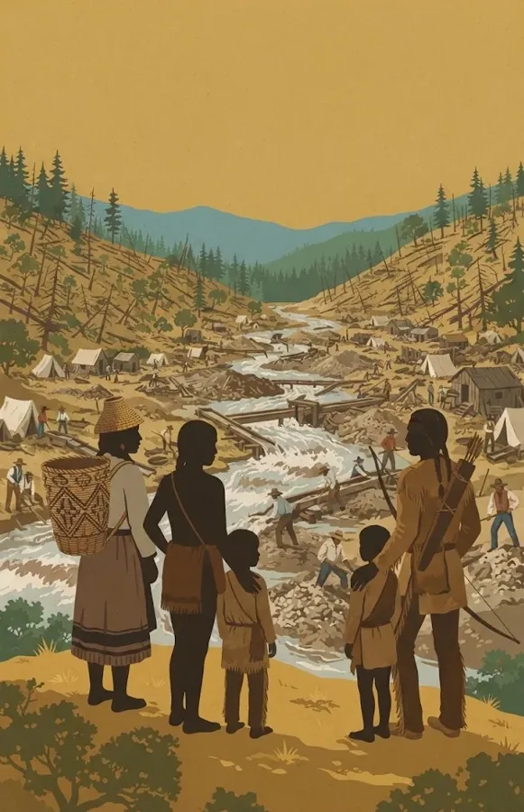
En la década de 1840, los Estados Unidos decidieron que su destino era llegar hasta el Pacífico. Le quitaron a México la mitad de su territorio, abrieron caminos a través de las llanuras y, en California, encontraron oro. Por esos caminos pasaron cientos de miles de colonos. En California, el resultado fue lo que hoy el propio estado llama por su nombre: un genocidio.
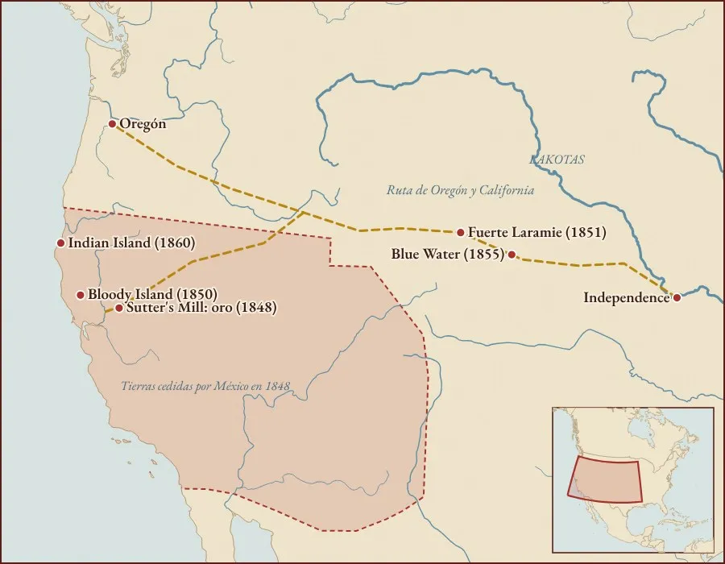
El destino manifiesto
En 1845, un periodista de Nueva York escribió que el «destino manifiesto» de los Estados Unidos era extenderse por todo el continente que la Providencia les había dado. La expresión tuvo éxito porque decía en voz alta lo que muchos pensaban: que el Oeste era una tierra vacía, esperando a ser ocupada por granjeros blancos y cristianos. Los pueblos que vivían allí no contaban.
Al año siguiente, los Estados Unidos declararon la guerra a México. En 1848, con el ejército norteamericano en la ciudad de México, se firmó el tratado de Guadalupe Hidalgo. México perdió más de la mitad de su territorio: California, Nuevo México, Arizona, Nevada, Utah y parte de Colorado, además de Texas, que ya se había separado. Así, buena parte de la antigua frontera española, con sus presidios, sus misiones, sus genízaros y sus pueblos indios, pasó a manos de los Estados Unidos.
Los caminos de las carretas
Mientras tanto, por las llanuras empezaban a pasar caravanas de carretas cubiertas de lona. Desde 1841, familias de granjeros salían de Misuri hacia Oregón por un camino que seguía el río Platte, cruzaba las Montañas Rocosas y llegaba al Pacífico tras cuatro o cinco meses de viaje. Era la ruta de Oregón. Más tarde se abrieron otras hacia California y hacia Utah, donde se instalaron los mormones. Entre 1840 y 1860, unas cuatrocientas mil personas recorrieron aquellos caminos.
Las películas han contado esos viajes como una aventura llena de ataques indios. La realidad fue distinta. La mayoría de los colonos que murieron por el camino lo hicieron de enfermedades, sobre todo de cólera, o en accidentes. Durante años, muchos pueblos de las llanuras comerciaron con las caravanas, les vendieron caballos y comida, les ayudaron a cruzar los ríos y les cobraron un pequeño peaje por pasar por sus tierras.
El problema era otro. Las caravanas eran tantas que arrasaban todo lo que encontraban a su paso: la hierba de la que vivían los caballos y los bisontes, la poca leña de las orillas de los ríos, la caza. El valle del Platte, que había sido uno de los mejores pastos de las llanuras, quedó convertido en un camino pelado de cientos de kilómetros. Y las caravanas traían también enfermedades: en 1849 el cólera mató a miles de lakotas, cheyenes y pawnees.
El tratado de Horse Creek
Para proteger los caminos, el gobierno de los Estados Unidos convocó en 1851 una gran reunión junto al fuerte Laramie, en el actual Wyoming. Acudieron más de diez mil indios: lakotas, cheyenes, arapahos, crows, asiniboines, mandanes e hidatsas. Fue una de las mayores reuniones de la historia de las llanuras.
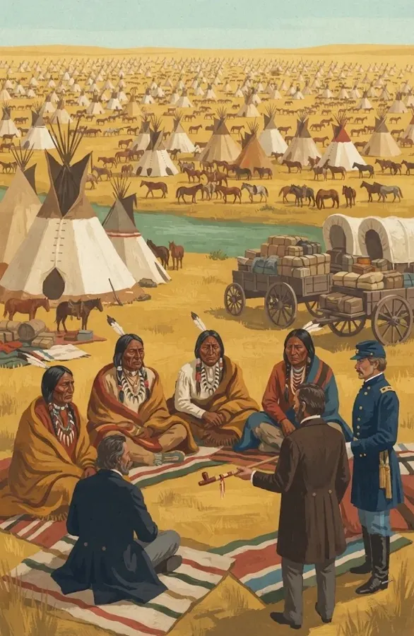
El 17 de septiembre de 1851, en la desembocadura del arroyo Horse Creek, se firmó el tratado. Los pueblos indios aceptaban que el gobierno construyera caminos y fuertes en sus tierras y que pasaran por ellas los colonos. A cambio, recibirían cada año mercancías por valor de cincuenta mil dólares durante cincuenta años, y se fijaban las tierras de cada pueblo. Cuando el tratado llegó a Washington, el Senado redujo por su cuenta los cincuenta años a diez. Los jefes que lo habían firmado nunca aprobaron el cambio. Los pagos llegaron tarde, incompletos o nunca. Las fronteras dibujadas en el papel fueron ignoradas casi desde el principio.
Una vaca
En agosto de 1854, una vaca de una caravana mormona se escapó y entró en un campamento de lakotas brulés cerca del fuerte Laramie. Un joven la mató y la repartió. El jefe brulé, Oso Conquistador, ofreció pagarla con un caballo. Pero un joven teniente recién salido de la academia militar, John Grattan, se presentó en el campamento con treinta soldados y dos cañones para detener al culpable. Hubo discusión, alguien disparó y los soldados abrieron fuego. Oso Conquistador cayó herido de muerte. Los guerreros lakotas mataron a Grattan y a todos sus hombres.
La respuesta del ejército llegó un año después. En septiembre de 1855, el general William Harney atacó un campamento brulé junto al arroyo Blue Water, en Nebraska, que no había tenido nada que ver con la muerte de Grattan. Murieron unos ochenta y seis lakotas, muchos de ellos mujeres y niños que huían, y unas setenta mujeres y niños fueron hechos prisioneros. Los lakotas lo llamaron la matanza de Harney. Entre los jóvenes que vieron las consecuencias de aquel ataque estaba un muchacho oglala de unos catorce años que más tarde sería conocido como Caballo Loco.
California: de las misiones al oro
California había sido española desde 1769, cuando el fraile Junípero Serra y el capitán Gaspar de Portolá fundaron las primeras misiones y presidios. Las misiones españolas reunieron a miles de indios californianos para convertirlos y hacerlos trabajar en sus campos y talleres. Muchos entraron por hambre o por la fuerza, y no podían marcharse: los que huían eran perseguidos y castigados. En aquellas misiones, donde vivían hacinados, las enfermedades europeas mataron a muchísimos. Es una historia que España y la Iglesia deben contar sin esconderla.
Pero lo peor estaba por llegar. El 24 de enero de 1848, nueve días antes de que se firmara el tratado de Guadalupe Hidalgo, un carpintero que construía un aserradero en el río American encontró unas pepitas de oro. En pocos meses, la noticia corrió por el mundo. En 1849 llegaron a California más de ochenta mil buscadores, y en pocos años fueron cientos de miles. Ríos enteros fueron removidos, los bosques talados, los peces y la caza desaparecieron. Los pueblos indios de la Sierra Nevada se quedaron sin nada que comer.
«Una guerra de exterminio»
En 1850, California entró en los Estados Unidos. Aquel mismo año, su primera asamblea aprobó una ley con un nombre que parece una burla: Ley para el Gobierno y la Protección de los Indios. Permitía a los colonos quedarse con niños indios como «aprendices» y subastar como trabajadores a los indios adultos detenidos por «vagancia». Bajo esa ley, y fuera de ella, entre diez mil y veintisiete mil indios californianos fueron obligados a trabajar como esclavos, entre ellos miles de niños.
En enero de 1851, el gobernador Peter Burnett dijo ante la asamblea del estado: «Hay que contar con que se seguirá librando una guerra de exterminio entre las razas hasta que la raza india se extinga». No fue una frase al aire. El estado pagó con más de un millón de dólares a grupos de milicianos voluntarios que salían a matar indios, y el gobierno federal le devolvió buena parte de ese dinero. Algunos pueblos ofrecían recompensas por cabelleras o cabezas de indios.
Las matanzas se sucedieron. En 1850, en la isla de Bloody Island, en el lago Clear, soldados del ejército mataron a entre sesenta y cien indios pomos, en su mayoría mujeres y niños. En 1853, en Yontoket, colonos quemaron una aldea tolowa durante una ceremonia religiosa. En 1860, en la isla de Indian Island, un grupo de colonos asesinó de madrugada a entre ochenta y doscientos cincuenta wiyots, casi todos mujeres, niños y ancianos, que dormían tras una fiesta.
Cuando llegó el oro, en California vivían unos ciento cincuenta mil indios. En 1870 quedaban unos treinta mil. La mayoría murió de hambre, de enfermedades y de la pérdida de sus tierras, pero según el historiador Benjamin Madley, entre 1846 y 1873 colonos, milicianos y soldados mataron directamente a entre nueve mil y dieciséis mil.
En 2019, el gobernador de California, Gavin Newsom, pidió perdón en nombre del estado a los pueblos indios de California. Y usó la palabra que durante siglo y medio se había evitado: «Se llama genocidio».
Línea de tiempo
Sangre en las llanuras
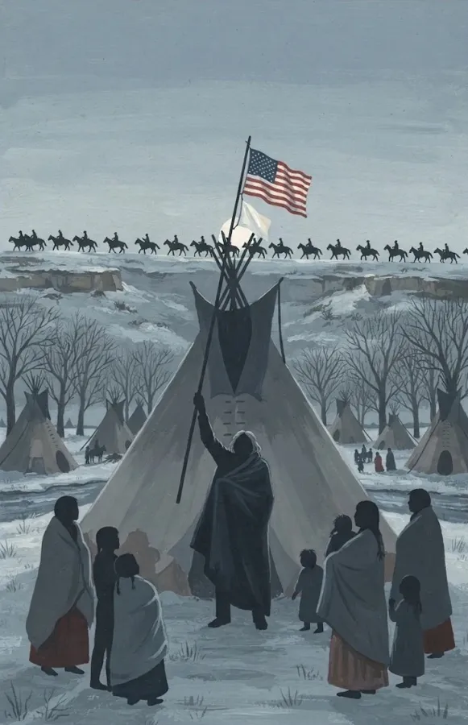
Mientras los Estados Unidos se desangraban en la guerra de Secesión, en el Oeste empezó otra guerra. No hubo grandes batallas entre ejércitos, sino emboscadas, incursiones y, sobre todo, ataques por sorpresa contra campamentos dormidos. Bear River, Sand Creek, el Washita, el río Marías: nombres que en España casi nadie conoce y que en las llanuras nadie ha olvidado.
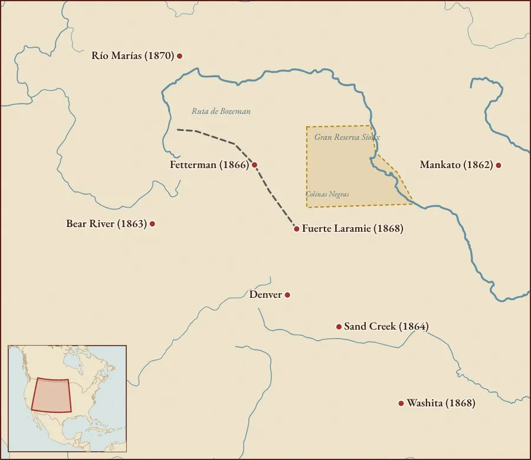
La horca de Mankato
La guerra empezó en el lugar menos esperado: en Minnesota, en la tierra de los dakotas, los parientes orientales de los lakotas. En 1851 habían vendido la mayor parte de su territorio a cambio de una pequeña reserva junto al río Minnesota, pagos en dinero y comida. En 1862, con el país en guerra, los pagos no llegaron. Los almacenes del gobierno estaban llenos de comida, pero los comerciantes se negaban a fiarla. Uno de ellos, Andrew Myrick, dijo: «Si tienen hambre, que coman hierba».
En agosto de 1862, un grupo de jóvenes dakotas mató a cinco colonos. Los jefes, sabiendo lo que vendría, decidieron ir a la guerra. Durante seis semanas atacaron granjas y pueblos, y murieron cientos de colonos, entre ellos muchas mujeres y niños. Myrick apareció muerto con la boca llena de hierba. Después, el ejército derrotó a los dakotas. Un tribunal militar juzgó a casi cuatrocientos prisioneros en juicios de pocos minutos y condenó a muerte a más de trescientos. El presidente Abraham Lincoln revisó los casos y redujo la lista. El 26 de diciembre de 1862, en Mankato, treinta y ocho dakotas fueron ahorcados a la vez. Es la mayor ejecución colectiva de la historia de los Estados Unidos. Los demás dakotas, incluidos los que no habían luchado, fueron expulsados de Minnesota.
Bear River
Un mes después, el 29 de enero de 1863, en el sur del actual Idaho, el coronel Patrick Connor atacó al amanecer un campamento de invierno de los shoshones junto al río Bear. Los shoshones, cuyas tierras de caza ocupaban ya los colonos y los mormones, pasaban hambre y habían atacado algunas granjas y caravanas. Connor tenía orden de castigarlos.
Lo que siguió no fue una batalla. Los soldados rodearon el campamento y dispararon durante horas contra hombres, mujeres y niños que intentaban esconderse entre los sauces o cruzar el río helado. Murieron entre doscientos cincuenta y casi quinientos shoshones, entre ellos su jefe, Oso Cazador. Hubo violaciones. Connor fue ascendido a general. Durante más de un siglo, en los libros de historia aquello se llamó «la batalla de Bear River». Hoy se considera una de las peores matanzas de indios de la historia de los Estados Unidos.
Sand Creek
En Colorado, la fiebre del oro de 1858 había llenado de mineros las tierras que el tratado de 1851 reconocía a cheyenes y arapahos. Hubo choques, robos de ganado y muertes en los dos lados. En 1864, el gobernador de Colorado llamó a los «indios amistosos» a reunirse cerca de los fuertes, donde estarían a salvo, y animó a los colonos a perseguir a los demás.
Un jefe cheyene, Caldera Negra, había buscado la paz durante años. Viajó a Denver para hablar con el gobernador y con los militares, y después acampó con unos setecientos cheyenes y arapahos, en su mayoría mujeres, niños y ancianos, junto al arroyo Sand Creek, donde le habían dicho que estaría protegido.
Al amanecer del 29 de noviembre de 1864, el coronel John Chivington, un antiguo predicador metodista con ambiciones políticas, llegó con unos setecientos soldados voluntarios. Al verlos, Caldera Negra izó sobre su tienda una gran bandera de los Estados Unidos que le habían regalado años antes, y debajo una bandera blanca. Los soldados abrieron fuego.
Murieron unas ciento cincuenta personas, quizá más; unas dos terceras partes eran mujeres y niños. Muchos fueron perseguidos y asesinados en los hoyos que habían cavado en la arena del arroyo para esconderse. Los soldados mutilaron los cuerpos, cortaron cabelleras, orejas y genitales, y después los exhibieron en Denver como trofeos. A Chivington se le atribuye una frase que resumía su idea de la guerra: había que matar a todos, grandes y pequeños, porque «de las liendres salen piojos».
No todos obedecieron. El capitán Silas Soule y el teniente Joseph Cramer se negaron a disparar y ordenaron a sus hombres que no se movieran. Soule contó después lo que había visto ante una comisión de investigación. Semanas más tarde lo asesinaron en una calle de Denver. Una comisión del Congreso calificó lo ocurrido de «matanza vil y cobarde», pero nadie fue juzgado. Chivington ya había dejado el ejército y nunca fue castigado.
Caldera Negra sobrevivió. Después de Sand Creek, muchos jóvenes cheyenes se unieron a los Soldados Perro y, junto a lakotas y arapahos, atacaron durante meses ranchos, diligencias y poblados a lo largo del río Platte.
La guerra de Nube Roja
En el norte, el gobierno quiso abrir un nuevo camino hacia las minas de oro de Montana: la ruta de Bozeman, que cruzaba el país del río Powder, el mejor territorio de caza que les quedaba a los lakotas. Para protegerlo construyó tres fuertes. Un jefe oglala, Nube Roja, avisó de que no lo permitiría.
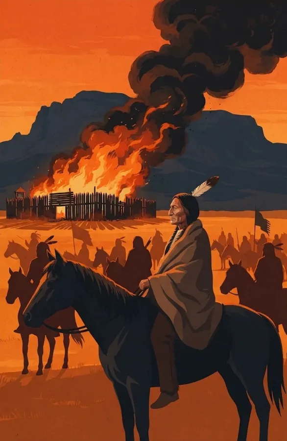
Durante dos años, de 1866 a 1868, los lakotas, cheyenes y arapahos de Nube Roja cercaron los fuertes y atacaron a todo el que salía de ellos. El 21 de diciembre de 1866, un pequeño grupo de guerreros, entre ellos el joven Caballo Loco, se dejó ver cerca del fuerte Phil Kearny y fingió huir. El capitán William Fetterman, que, según se cuenta, había presumido de que con ochenta hombres podía atravesar toda la nación sioux, salió tras ellos con exactamente ochenta y un soldados. Al otro lado de una colina le esperaban cientos de guerreros. No sobrevivió ninguno.
Fue la única guerra que los Estados Unidos perdieron contra los pueblos de las llanuras. En 1868, en un nuevo tratado firmado en el fuerte Laramie, el gobierno aceptó retirar los fuertes, que los lakotas quemaron al día siguiente. Reconoció además la Gran Reserva Sioux, con todas las Colinas Negras, «para uso y ocupación absoluta y sin perturbación» de los lakotas, y el país del río Powder como territorio de caza. Nube Roja firmó en noviembre. Ningún blanco podría entrar allí sin su permiso. Así lo decía el papel.
El Washita
En el sur, el general Philip Sheridan decidió que la mejor forma de acabar con los cheyenes y sus aliados era atacarlos en invierno, cuando sus caballos estaban débiles y los campamentos no podían moverse. Sus órdenes eran destruir aldeas, provisiones y caballos.
Al amanecer del 27 de noviembre de 1868, casi cuatro años después de Sand Creek, el teniente coronel George Armstrong Custer cayó con el Séptimo de Caballería sobre un campamento cheyene junto al río Washita, en el actual Oklahoma. Era el campamento de Caldera Negra, que seguía buscando la paz y había ido días antes a pedir protección al fuerte más cercano. Caldera Negra y su mujer murieron al intentar huir. Las cifras de muertos van de unas pocas decenas a más de cien, entre ellos mujeres y niños. Custer se llevó cincuenta y tres mujeres y niños prisioneros y mandó matar unos seiscientos setenta y cinco caballos para que los supervivientes no pudieran ni moverse ni cazar.
El río Marías
El último ejemplo es quizá el más brutal. En enero de 1870, el ejército buscaba en Montana al grupo de un jefe pie negro llamado Jefe Montaña, acusado de matar a un comerciante. Al amanecer del 23 de enero, el mayor Eugene Baker encontró un campamento junto al río Marías. Su explorador le advirtió de que no era el de Jefe Montaña, sino el de Corredor Pesado, un jefe amigo de los blancos que tenía un documento del gobierno que lo protegía. Según los testigos, Baker respondió que todos los pies negros eran iguales y ordenó atacar.
En el campamento había viruela, y la mayoría de los hombres sanos estaban fuera cazando. Corredor Pesado salió de su tienda agitando su papel y fue el primero en caer. Murieron al menos ciento setenta y tres pies negros. Según el agente del gobierno, noventa eran mujeres y cincuenta niños. En el lado del ejército murió un soldado.
Esta vez la noticia indignó a parte del país, y el presidente Ulysses Grant anunció una «política de paz» que confiaba las reservas a agentes elegidos por las iglesias. Baker nunca fue juzgado. Su superior, el general Sheridan, impidió la investigación. A los pies negros les recortaron la reserva dos años después.
Línea de tiempo
Little Bighorn
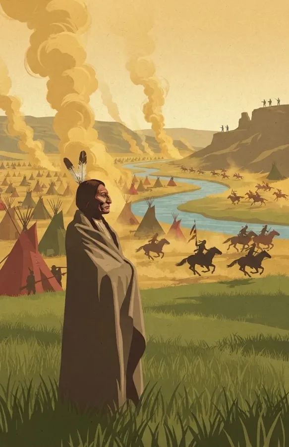
El tratado de 1868 prometía que las Colinas Negras serían de los lakotas para siempre. Duró seis años, hasta que alguien encontró oro. Lo que vino después fue la batalla más famosa del Oeste, la mayor victoria de los pueblos de las llanuras y, a la vez, el principio de su derrota definitiva.
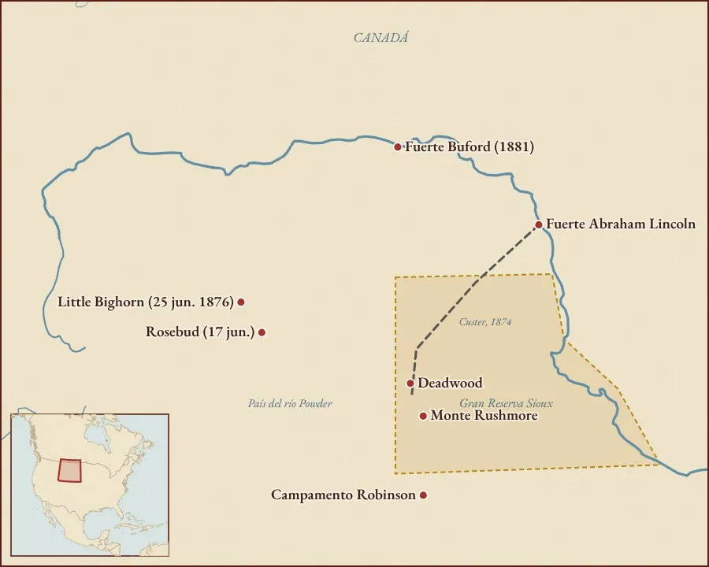
El corazón de todo lo que existe
Para los lakotas, las Colinas Negras no eran solo un buen sitio para cazar o pasar el invierno. Las llamaban He Sapa y las consideraban sagradas, el centro de su mundo; algunos las describían como «el corazón de todo lo que existe». Allí iban los jóvenes a buscar visiones, y allí se cortaban los palos para los tipis y se cazaban los animales que el invierno escondía en sus valles protegidos. El tratado de 1868 se las había reconocido con palabras solemnes: serían suyas, para su uso exclusivo, y ningún blanco podría entrar en ellas sin su permiso.
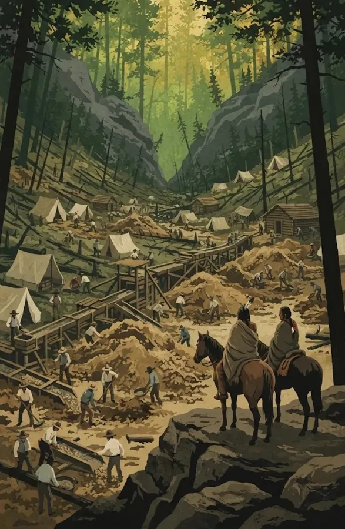
Pero desde hacía años corrían rumores de que en aquellas montañas había oro. En el verano de 1874, el gobierno envió una expedición militar para explorarlas. La mandaba el teniente coronel George Armstrong Custer, el mismo que había atacado el campamento de Caldera Negra en el Washita. Con él iban mil soldados, científicos, fotógrafos, periodistas… y dos buscadores de oro. Encontraron oro, y Custer se encargó de que la noticia llegara a todos los periódicos del país.
Al año siguiente, miles de mineros entraban en las Colinas Negras. El ejército, que según el tratado debía impedirlo, apenas lo intentó. En 1875 el gobierno ofreció comprar las Colinas Negras. Los lakotas se negaron. Toro Sentado, un jefe y hombre sagrado de los hunkpapas, dijo que no vendería ni una pizca de tierra. Entonces el gobierno cambió de estrategia: ordenó que todos los lakotas que vivían fuera de las agencias se presentaran en ellas antes del 31 de enero de 1876, en pleno invierno. Quien no lo hiciera sería considerado enemigo.
El sueño de Toro Sentado
Muchos no podían ni querían ir. En la primavera de 1876, miles de lakotas, cheyenes del norte y algunos arapahos se fueron reuniendo en el país del río Powder, alrededor de Toro Sentado y de Caballo Loco. Era el campamento más grande que se recordaba: a finales de junio, en el valle del río Little Bighorn, en Montana, vivían unas ocho mil personas, con entre mil quinientos y mil ochocientos guerreros, y miles de caballos.
A principios de junio, Toro Sentado celebró una Danza del Sol. Durante la ceremonia ofreció cien trozos de su propia piel, cortados de sus brazos, y bailó hasta caer agotado. Cuando despertó contó una visión: había visto a muchos soldados cayendo cabeza abajo dentro del campamento, como saltamontes que caen del cielo. Era una señal de que habría una gran victoria.
El ejército avanzaba hacia ellos en tres columnas, desde el norte, el este y el sur. El 17 de junio, junto al río Rosebud, los guerreros de Caballo Loco atacaron por sorpresa a la columna del general George Crook, que tuvo que retirarse. Pero en el campamento nadie pensó que esa fuera la batalla de la visión. Los soldados no habían caído dentro del campamento. Todavía no.
25 de junio de 1876
La columna del este, mandada por el general Alfred Terry, llevaba el Séptimo de Caballería de Custer. Terry envió a Custer por delante para que localizara el campamento. El 25 de junio por la mañana, desde lo alto de unas colinas, los exploradores crows y arikaras de Custer vieron las enormes manadas de caballos en el valle y le advirtieron de que allí había más enemigos de los que podían vencer. Custer creyó que los indios iban a huir, como en el Washita, y decidió atacar enseguida, sin esperar a Terry.
Dividió su regimiento en varios grupos. Mandó al mayor Marcus Reno con unos ciento cuarenta hombres a atacar el extremo sur del campamento, mientras él, con unos doscientos diez, avanzaba por las colinas para atacar más al norte. Envió al capitán Frederick Benteen a explorar en otra dirección.
El ataque de Reno se estrelló contra una masa de guerreros que salieron del campamento a defender a sus familias. Sus hombres huyeron en desorden, cruzaron el río y se refugiaron en lo alto de unas colinas, donde Benteen se les unió más tarde. Allí resistieron, cercados, hasta el día siguiente.
Custer nunca llegó a entrar en el campamento. Cuando intentó bajar hacia el río, los guerreros, dirigidos entre otros por el hunkpapa Gall, por el cheyene Dos Lunas y por Caballo Loco, lo rodearon. En poco más de una hora, Custer y todos los soldados de sus cinco compañías murieron en las colinas sobre el Little Bighorn. Los últimos cuarenta, más o menos, cayeron en lo alto de una loma donde hoy hay un monumento. En total murieron unos doscientos sesenta y ocho soldados, exploradores y civiles del ejército. Del lado indio, entre treinta y cien.
El 26 de junio por la tarde, al ver que se acercaban las columnas de Terry, el gran campamento se puso en marcha y se dispersó.
La venganza de un país
La noticia llegó al Este a comienzos de julio, justo cuando los Estados Unidos celebraban el centenario de su independencia. Fue un escándalo nacional. Custer se convirtió en un héroe trágico, el protagonista de cuadros, novelas y, más tarde, películas que contaban la historia al revés: un puñado de valientes masacrados por salvajes.
La respuesta fue implacable. El ejército envió miles de soldados a perseguir a los grupos dispersos durante todo el invierno, quemando campamentos, provisiones y caballos. Y el Congreso encontró otra arma: en agosto de 1876 aprobó una ley que cortaba la comida a los lakotas de las agencias hasta que entregaran las Colinas Negras. Los lakotas la llamaron la ley de «vende o muérete de hambre». Una comisión recorrió las agencias recogiendo firmas. El tratado de 1868 exigía la firma de las tres cuartas partes de los hombres adultos para cualquier venta de tierras; la comisión no consiguió ni de lejos esa cifra. Aun así, el 28 de febrero de 1877, el Congreso declaró que las Colinas Negras dejaban de formar parte de la reserva.
El final de dos jefes
Caballo Loco siguió luchando durante el invierno, pero su gente pasaba frío y hambre. En mayo de 1877 se rindió en el campamento Robinson, en Nebraska, con unos novecientos seguidores. Pocos meses después, rumores, celos entre jefes y el miedo de los oficiales a que volviera a escaparse hicieron que el ejército decidiera detenerlo. El 5 de septiembre de 1877, al darse cuenta de que lo llevaban a una celda, intentó soltarse. Un soldado le clavó la bayoneta. Murió esa noche. Tenía unos treinta y cinco años. No existe ninguna fotografía suya que se considere auténtica.
Toro Sentado huyó con su gente a Canadá, a la «tierra de la abuela», como llamaban a la reina Victoria. Allí vivieron unos años, pero los bisontes desaparecían también al norte de la frontera y el gobierno canadiense no quería mantenerlos. En julio de 1881, hambrientos, Toro Sentado y los últimos ciento ochenta y seis fieles se rindieron en el fuerte Buford. Toro Sentado entregó su fusil a su hijo de ocho años para que este se lo diera al oficial, y dijo que quería que se recordara que había sido el último de su pueblo en rendir su arma.
Un cheque sin cobrar
La historia de las Colinas Negras no terminó en 1877. Durante un siglo, los lakotas reclamaron ante los tribunales. En 1980, el Tribunal Supremo de los Estados Unidos les dio la razón: las Colinas Negras se habían tomado de forma ilegal, y el gobierno debía pagarles el valor de 1877 con intereses, unos ciento seis millones de dólares.
Los lakotas se negaron a cobrar. Aceptar el dinero significaba aceptar la venta, y las Colinas Negras, dijeron, no estaban en venta. El dinero sigue depositado en una cuenta del gobierno, acumulando intereses. Hoy supera con mucho los mil millones de dólares. Nadie lo ha tocado.
Mientras tanto, en las Colinas Negras, en una montaña llamada Rushmore, se esculpieron entre 1927 y 1941 los rostros gigantes de cuatro presidentes de los Estados Unidos.
Línea de tiempo
El fin del bisonte
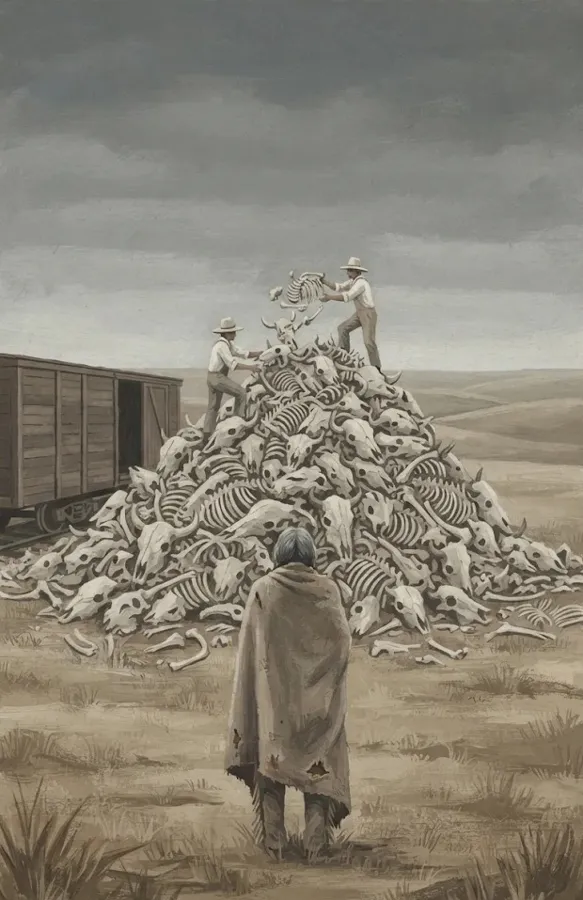
Ningún ejército habría podido vencer a los pueblos jinetes mientras hubiera bisontes. Así que los bisontes desaparecieron. En apenas quince años, decenas de millones de animales fueron convertidos en pieles y montañas de huesos, y los pueblos de las llanuras se quedaron sin nada que comer. Los últimos que resistieron, como los nez percés del jefe Joseph o los apaches de Gerónimo, acabaron rindiéndose al hambre y al cansancio.
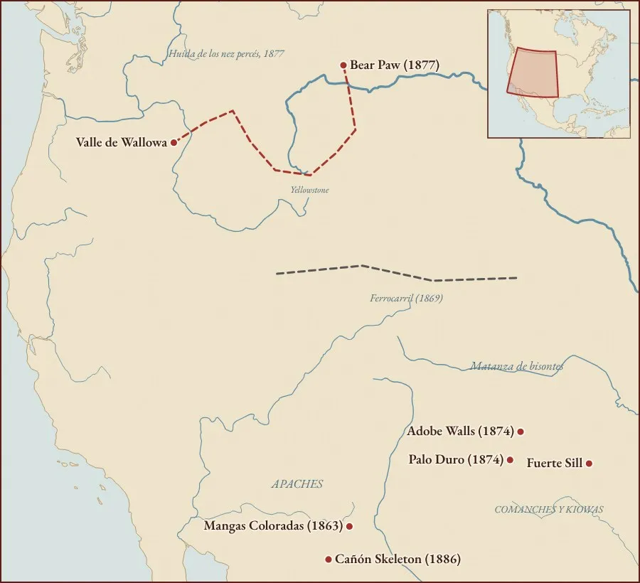
Rifles y ferrocarriles
En 1869 se terminó el primer ferrocarril que cruzaba los Estados Unidos de costa a costa. Sus vías partían en dos las llanuras, y con el tren llegaron los cazadores. Al principio, los viajeros disparaban a los bisontes desde las ventanillas, por diversión. Pero el verdadero negocio empezó en 1871, cuando unas curtidurías del Este encontraron la manera de convertir la piel de bisonte en un cuero resistente, bueno para fabricar las correas de transmisión de las máquinas de las fábricas.
De repente, cada bisonte valía dinero. Miles de cazadores de pieles se lanzaron a las llanuras con rifles de gran calibre capaces de matar a un animal a cientos de metros. Un buen tirador, escondido y sin moverse, podía matar decenas de bisontes en una mañana antes de que la manada se diera cuenta. Detrás venían los desolladores, que arrancaban la piel y dejaban la carne pudrirse. Entre 1872 y 1874, solo en las llanuras del sur, se mataron varios millones de bisontes. El olor de los cadáveres se notaba a kilómetros.
Años después llegaron los recolectores de huesos, que se vendían para fabricar abono y para refinar azúcar. Junto a las estaciones de tren se levantaban montañas de cráneos más altas que una casa.
Que se acaben
Hubo gente que intentó pararlo. En 1874, el Congreso aprobó una ley que prohibía matar bisontes hembra y castigaba a quien matara más de los que necesitara para comer. Los indios quedaban fuera de la prohibición. El presidente Ulysses Grant no la firmó, y la ley murió en un cajón.
Muchos militares y políticos lo dijeron con claridad: mientras quedaran bisontes, los pueblos de las llanuras serían libres; cuando se acabaran, tendrían que ir a las reservas y vivir de lo que el gobierno quisiera darles. El secretario del Interior, Columbus Delano, escribió en 1873 que no lamentaría la desaparición total del bisonte si con ella se conseguía que los indios dependieran de los productos del suelo y de su propio trabajo. El ejército, por su parte, dejó hacer a los cazadores y, a veces, les dio munición.
En los años sesenta del siglo XIX vivían todavía en las llanuras unos quince millones de bisontes. En 1889, el naturalista William Hornaday intentó contar los que quedaban y escribió un libro con un título que lo decía todo: El exterminio del bisonte americano. Calculó que quedaban en total poco más de mil, la mayoría en zoológicos, ranchos y en el parque de Yellowstone. En las llanuras, libres, apenas unos centenares.
Para los pueblos jinetes, fue el fin del mundo. No era solo que se quedaran sin comida, sin pieles para los tipis y sin cuero para la ropa. El bisonte era el centro de sus ceremonias, de sus canciones y de su manera de entender la vida. Muchos ancianos contaron después que, al ver las llanuras vacías, sintieron que su pueblo había muerto con ellas.
La guerra del Río Rojo
En las llanuras del sur, los comanches, los kiowas y los cheyenes del sur vieron cómo los cazadores de pieles entraban en las tierras que los tratados les reservaban. En junio de 1874, cientos de guerreros atacaron un puesto de cazadores en Adobe Walls, en Texas. Fueron rechazados por los rifles de largo alcance. Empezó entonces la llamada guerra del Río Rojo.
El ejército envió varias columnas a perseguir a los grupos que no se habían presentado en las reservas. En septiembre de 1874, el coronel Ranald Mackenzie encontró un gran campamento escondido en el cañón de Palo Duro, en el Llano Estacado. Murieron pocos indios, pero Mackenzie quemó todos los tipis y provisiones, y mandó matar a más de mil caballos capturados. Sin caballos, sin bisontes y en pleno invierno, los comanches se fueron rindiendo uno a uno. En junio de 1875, el último gran jefe comanche, Quanah Parker, hijo de un guerrero comanche y de una mujer blanca que había sido raptada de niña, llegó con los suyos al fuerte Sill. La Comanchería, el gran imperio a caballo que había tenido en jaque a España, se había terminado.
«No lucharé más, para siempre»
En el noroeste, los nez percés habían sido amigos de los blancos desde que salvaron a Lewis y Clark del hambre en 1805. Una parte de ellos, dirigida por el jefe Joseph, vivía en el valle de Wallowa, en Oregón, que nunca habían vendido. En 1877, el gobierno les ordenó trasladarse a una reserva pequeña. Mientras se preparaban para obedecer, unos jóvenes nez percés mataron a varios colonos para vengar la muerte de un pariente, y el ejército fue a por todos.
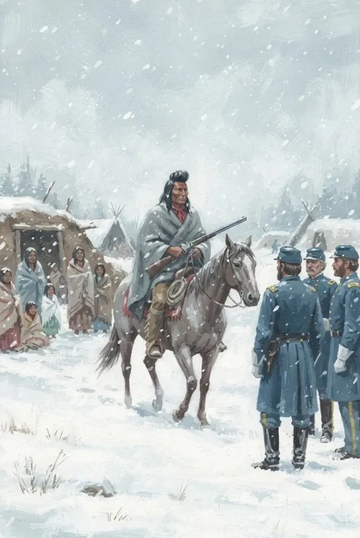
Lo que siguió es una de las historias más extraordinarias del Oeste. Unos ochocientos nez percés, la mayoría mujeres, niños y ancianos, con miles de caballos, huyeron durante más de tres meses perseguidos por varios ejércitos, recorriendo cerca de dos mil kilómetros a través de montañas, ríos y el parque de Yellowstone, para intentar llegar a Canadá. Derrotaron o esquivaron a las tropas varias veces. A finales de septiembre, agotados, se detuvieron a descansar en las montañas Bear Paw, en Montana. Estaban a solo unos sesenta kilómetros de la frontera. Allí los alcanzó el ejército.
El 5 de octubre de 1877, tras días de asedio con nieve y frío, Joseph se rindió. Sus palabras, recogidas por un oficial, se hicieron famosas: «Estoy cansado de luchar. Nuestros jefes han muerto. Hace frío y no tenemos mantas. Los niños pequeños se mueren de frío. […] Oídme, jefes míos: estoy cansado. Mi corazón está enfermo y triste. Desde donde ahora está el sol, no lucharé más, para siempre».
Les habían prometido que podrían volver a su tierra. No se cumplió. Los enviaron a Kansas y después al Territorio Indio, donde muchos murieron de malaria. Joseph pasó el resto de su vida pidiendo volver a Wallowa. Nunca le dejaron. Murió en 1904 en una reserva del estado de Washington. El médico escribió que había muerto de pena.
Apaches: de España a Gerónimo
Los apaches fueron los enemigos más constantes de España en toda su frontera norte. Durante dos siglos, sus incursiones contra Nuevo México, Sonora, Chihuahua y Texas obligaron a levantar una línea de presidios desde el golfo de California hasta Texas. A finales del siglo XVIII, el virrey Bernardo de Gálvez, el mismo que había ayudado a la independencia de los Estados Unidos luchando contra los ingleses, ordenó combinar la guerra con una política nueva: a los grupos apaches que aceptaran la paz se les daban tierras junto a los presidios, raciones de comida, ganado y regalos. Hacia 1793, unos dos mil apaches vivían en paz junto a una docena de presidios. Aquella paz, frágil y pagada con maíz y carne, duró casi cuarenta años.
Cuando México se independizó, el dinero se acabó. En 1831 se suprimieron las raciones, los apaches volvieron a la guerra y los estados de Sonora y Chihuahua llegaron a pagar recompensas por cabelleras apaches: cien pesos por la de un hombre. Cazadores de cabelleras mexicanos y norteamericanos mataron a cientos de apaches, y también a otros indios y a campesinos mexicanos, porque una cabellera no se distinguía de otra.
Cuando los Estados Unidos se quedaron con Arizona y Nuevo México, heredaron esa guerra. En 1863, el gran jefe Mangas Coloradas acudió a parlamentar con una bandera blanca y fue capturado y asesinado por los soldados. Su yerno Cochise combatió durante años hasta firmar la paz. El último en rendirse fue un guerrero y hombre de medicina chiricahua, Gerónimo, que había perdido a su madre, a su mujer y a sus tres hijos en un ataque de soldados mexicanos en 1858. Durante años escapó una y otra vez de la reserva y de los soldados de dos países, con un grupo cada vez más pequeño. Al final quedaban con él unas treinta y cinco personas, perseguidas por cinco mil soldados norteamericanos y tres mil mexicanos.
El 4 de septiembre de 1886, en el cañón Skeleton, en Arizona, Gerónimo se rindió. Le habían prometido que, tras un tiempo en Florida, podría volver a su tierra. Nunca volvió. El gobierno envió como prisioneros de guerra a Florida no solo a su grupo, sino a todos los apaches chiricahuas, incluidos los exploradores que habían ayudado al ejército a encontrarlo. Muchos murieron de malaria y de tuberculosis. Sus hijos fueron enviados a internados lejanos. Los chiricahuas fueron prisioneros de guerra durante veintisiete años, hasta 1913.
Gerónimo murió en 1909 en el fuerte Sill, en Oklahoma, todavía prisionero. Antes, el gobierno lo había exhibido en ferias, e incluso lo hizo desfilar en la toma de posesión del presidente Theodore Roosevelt, en 1905. Aprovechó la ocasión para pedirle al presidente que le dejara volver a Arizona. Roosevelt dijo que no.
Línea de tiempo
Wounded Knee y las reservas
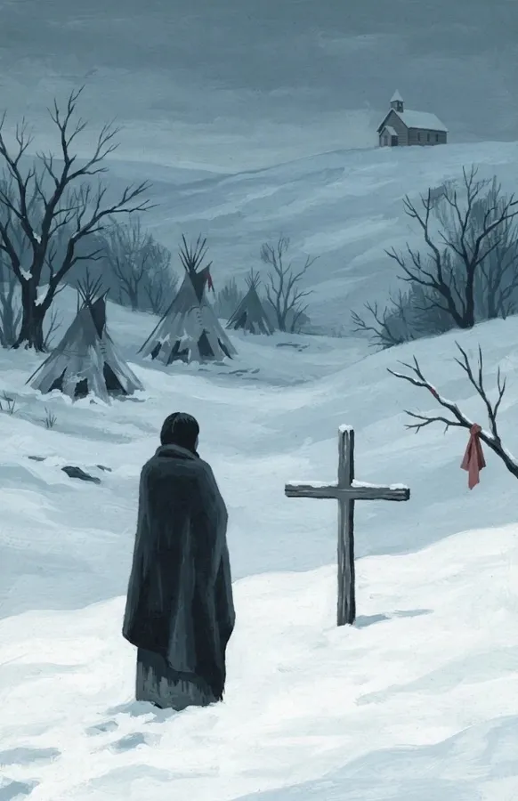
Sin bisontes, sin caballos y encerrados en reservas, los pueblos de las llanuras se aferraron a una última esperanza: una danza que devolvería el mundo de antes. Terminó en la nieve de Wounded Knee, en 1890. Después vinieron décadas en las que el gobierno intentó que dejaran de ser indios: les quitaron la tierra, la lengua y los hijos. Pero no desaparecieron.
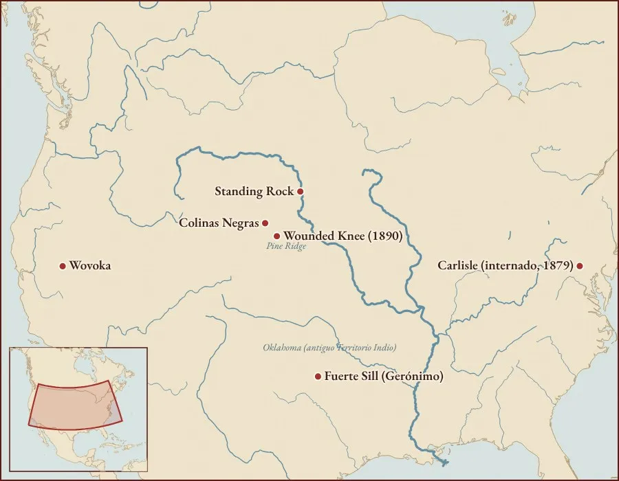
La vida en la reserva
Hacia 1880, casi todos los pueblos de las llanuras vivían ya en reservas: trozos de tierra, cada vez más pequeños, donde el gobierno los obligaba a quedarse. No podían salir sin permiso. No podían cazar, porque ya no quedaba nada que cazar. Vivían de las raciones que repartía el gobierno: carne de vaca, harina, café y azúcar, que llegaban tarde, en mal estado y en menos cantidad de la prometida. Muchos agentes y proveedores se enriquecían robando parte de ellas. El hambre, la tuberculosis y el sarampión hicieron estragos.
El gobierno quería convertir a los cazadores en granjeros. Pero las tierras de muchas reservas eran secas y pobres, y los antiguos guerreros no sabían ni querían arar. Se prohibieron la Danza del Sol y otras ceremonias, y los agentes trataron de quitar poder a los jefes tradicionales, nombrando a otros más dóciles y creando una policía india formada por los propios indios de la reserva.
La Danza de los Espíritus
En 1889, en Nevada, un hombre sagrado paiute llamado Wovoka tuvo una visión durante un eclipse de sol. Contó que había subido al cielo y que Dios le había mostrado el futuro: si los indios vivían en paz, trabajaban, no mentían ni robaban, y bailaban una danza en círculo que él les enseñaría, pronto llegaría un mundo nuevo. Los muertos volverían a la vida, los bisontes regresarían a las llanuras y los blancos desaparecerían.
La Danza de los Espíritus se extendió como el fuego por las reservas del Oeste. Entre los lakotas, hambrientos y desesperados, se convirtió en una esperanza a la que agarrarse. Algunos llevaban unas camisas de los espíritus, pintadas con símbolos sagrados, que según creían les protegerían de las balas. Los bailarines danzaban hasta caer en trance, y al despertar contaban que habían visto a sus parientes muertos.
Los agentes de las reservas se asustaron. Algunos periódicos hablaban de un levantamiento general. El gobierno envió miles de soldados a las reservas lakotas.
La muerte de Toro Sentado
Toro Sentado vivía en la reserva de Standing Rock. No era un bailarín de los espíritus, pero el agente de la reserva lo consideraba un peligro y ordenó detenerlo. Al amanecer del 15 de diciembre de 1890, una cuarentena de policías indios rodeó su cabaña y lo sacaron de la cama. Sus seguidores se reunieron alrededor. Hubo gritos, empujones y un disparo. En el tiroteo que siguió murieron Toro Sentado, su hijo de diecisiete años, varios de sus seguidores y seis policías. El hombre que había derrotado a Custer murió a manos de otros lakotas, enviados por el gobierno.
Wounded Knee
Tras la muerte de Toro Sentado, muchos de sus seguidores huyeron y se unieron al grupo de un jefe minneconjou llamado Pie Grande, que se dirigió en pleno invierno hacia la reserva de Pine Ridge, buscando la protección de Nube Roja. Pie Grande estaba enfermo de neumonía. El 28 de diciembre, el Séptimo de Caballería, el antiguo regimiento de Custer, los alcanzó y los llevó a acampar junto al arroyo Wounded Knee. Eran unos trescientos cincuenta lakotas, más de la mitad mujeres y niños. Los soldados, unos quinientos, colocaron alrededor del campamento cuatro cañones de tiro rápido.
La mañana del 29 de diciembre de 1890, los soldados empezaron a desarmar a los lakotas, registrando sus tiendas. Un joven sordo, que quizá no entendía lo que le pedían, se resistió a entregar su rifle. En el forcejeo se disparó un tiro. Los soldados abrieron fuego desde todas partes, y los cañones dispararon contra las tiendas. Muchas mujeres y niños fueron perseguidos y abatidos a kilómetros del campamento, mientras intentaban esconderse en un barranco.
Murieron al menos ciento cincuenta lakotas, y probablemente cerca de trescientos, unas dos terceras partes mujeres y niños. Pie Grande murió sobre la nieve. También murieron veinticinco soldados, muchos alcanzados por el fuego de sus propios compañeros. Pocos días después cayó una ventisca, y los cuerpos se quedaron congelados donde habían caído. Cuando volvieron a buscarlos, los enterraron en una fosa común. Una fotografía muestra a Pie Grande, rígido por el hielo, medio incorporado sobre la nieve.
El ejército concedió la Medalla de Honor, su máxima condecoración, a veinte de los soldados que participaron. Nunca se han retirado.
Wounded Knee suele considerarse el final de las guerras indias. Un hombre sagrado lakota, Alce Negro, que de niño había estado en Little Bighorn y que llegó al barranco aquel mismo día, contó muchos años después que, ya anciano, seguía viendo a las mujeres y a los niños tendidos a lo largo del arroyo, y que allí, bajo la nieve, había quedado enterrado algo más que los muertos: el sueño de todo un pueblo.
Quitarles la tierra: la ley Dawes
Si las armas habían terminado la guerra, las leyes terminaron con la tierra. En 1887, el Congreso aprobó la ley Dawes. Decía que las reservas, que eran propiedad común de cada pueblo, debían dividirse en parcelas individuales para cada familia, como granjas. Lo que sobraba se vendía a colonos blancos. Sus defensores decían que así los indios aprenderían a ser propietarios y granjeros. El resultado fue otro: muchas familias, sin dinero ni herramientas, perdieron sus parcelas por deudas, engaños o impuestos. Cuando la ley se derogó, en 1934, los pueblos indios habían pasado de tener unos cincuenta y seis millones de hectáreas a menos de veinte. Habían perdido casi dos tercios de lo que les quedaba.
Quitarles los hijos: los internados
Y quedaba lo más doloroso. En 1879, un militar llamado Richard Pratt fundó en Carlisle, Pensilvania, el primer gran internado para niños indios, lejos de sus familias. Su lema lo resumía todo: «Matar al indio que lleva dentro y salvar al hombre».
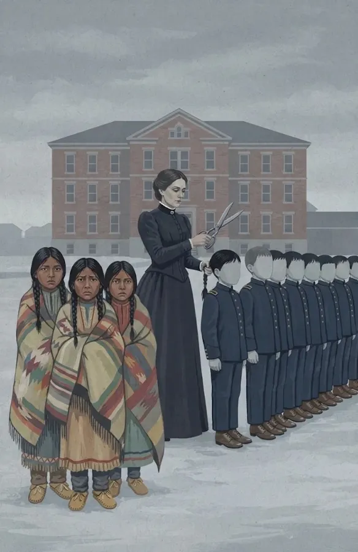
Durante décadas, decenas de miles de niños indios fueron llevados a cientos de internados, muchas veces a la fuerza. Nada más llegar les cortaban el pelo, les quemaban la ropa, les daban un nombre inglés y les prohibían hablar su lengua, con castigos para quien lo hiciera. Trabajaban buena parte del día. Muchos pasaron años sin ver a sus padres. Hubo malos tratos y abusos. Y muchos murieron de enfermedades, de hambre o de pena, y fueron enterrados en los cementerios de las escuelas, lejos de sus casas.
En 2024, una investigación del propio gobierno de los Estados Unidos, impulsada por la primera secretaria del Interior de origen indígena, Deb Haaland, contó más de cuatrocientos internados federales y al menos novecientos setenta y tres niños muertos en ellos, y advirtió de que la cifra real es mucho mayor. El 25 de octubre de 2024, el presidente Joe Biden viajó a una reserva de Arizona y pidió perdón formalmente en nombre del país. Era la primera vez que un presidente lo hacía.
Todavía aquí
En 1900, la población india de los Estados Unidos había caído a unas doscientas cincuenta mil personas, la cifra más baja de su historia. Muchos creían que los indios estaban condenados a desaparecer. No desaparecieron.
En 1924 se les reconoció la ciudadanía de los Estados Unidos, aunque algunos estados tardaron décadas en dejarles votar. En 1934 se detuvo el reparto de las tierras. En 1973, activistas del Movimiento Indio Americano ocuparon durante setenta y un días el pueblo de Wounded Knee para denunciar la pobreza de las reservas y los tratados rotos. En 2016, miles de personas de cientos de pueblos indios acamparon durante meses en la reserva de Standing Rock, donde murió Toro Sentado, para protestar contra un oleoducto que cruzaba sus tierras y su río.
Los pueblos que en 1900 parecían condenados a desaparecer seguían allí. Cómo viven hoy, y qué ha pasado con el dinero que se les ofreció por lo que se les quitó, es la historia del último capítulo.
Línea de tiempo
Los pueblos indios hoy
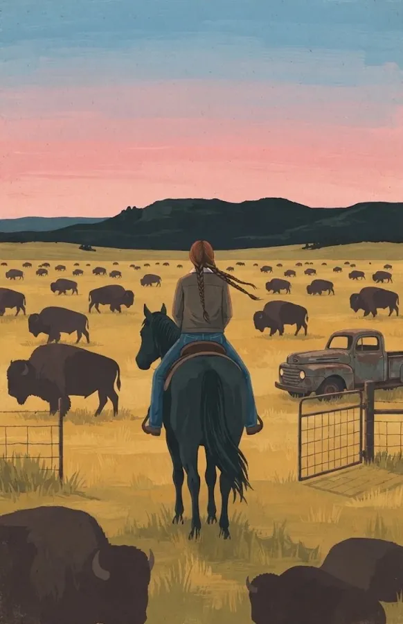
Los pueblos de las llanuras no son historia. Sus nietos y bisnietos viven hoy en las mismas reservas que se crearon en el siglo XIX, o en las grandes ciudades. Tienen sus propios gobiernos, sus tribunales y, en algunos casos, sus casinos. Muchos siguen siendo los más pobres de los Estados Unidos. Y algunos siguen esperando, o rechazando, el dinero con el que se quiso pagar lo que se les quitó.
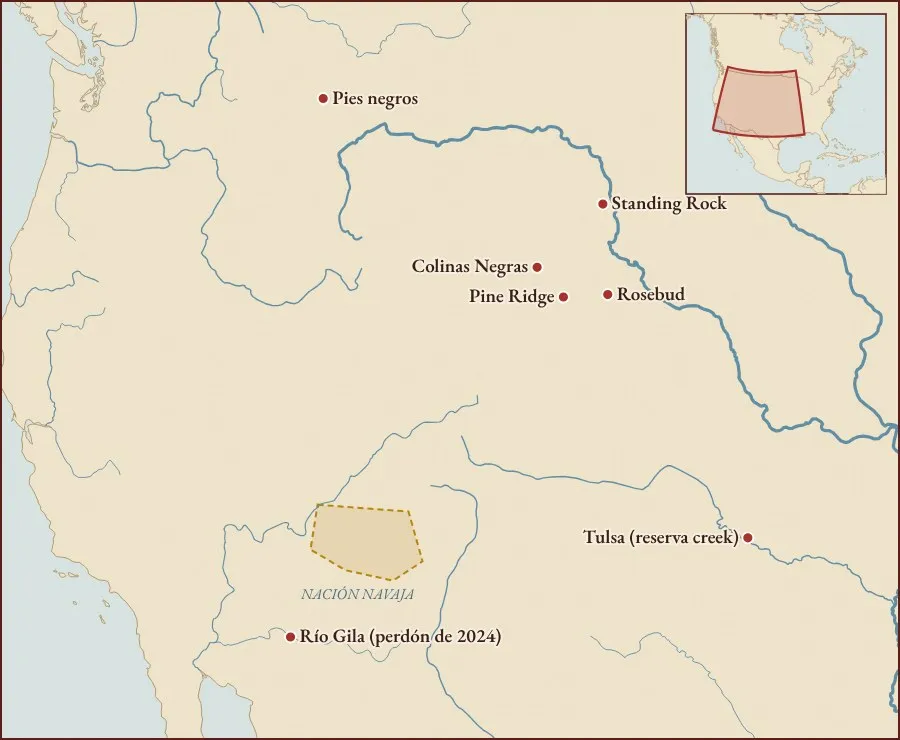
Cuántos son y dónde viven
En el censo de los Estados Unidos de 2020, unos 9,7 millones de personas dijeron ser indias o nativas de Alaska, solas o mezcladas con otros orígenes. De ellas, unos 3,7 millones declararon ser solo indias. Es la cifra más alta desde que existen censos, muy lejos de los apenas doscientos cincuenta mil de 1900.
El gobierno federal reconoce hoy 574 naciones indias, cada una con su propio gobierno, y existen más de trescientas reservas. La mayor, con diferencia, es la de la nación navaja, en Arizona, Nuevo México y Utah, más grande que Galicia. Pero la mayoría de los indios ya no vive en las reservas, sino en ciudades como Los Ángeles, Phoenix, Oklahoma City o Mineápolis, adonde muchos fueron trasladados en los años cincuenta por un programa del gobierno que pretendía «integrarlos».
Naciones dentro de una nación
Las reservas no son simples barrios ni pueblos. Son territorios donde cada nación india tiene un gobierno propio, con presidente o consejo elegido, policía, tribunales, escuelas y leyes propias. Es lo que se llama soberanía tribal: los Estados Unidos reconocen a las naciones indias como naciones «dependientes» con las que firmaron tratados, y esos tratados, aunque muchos se rompieron, siguen siendo ley.
A veces, esos papeles viejos todavía deciden cosas importantes. En 2020, en el caso McGirt contra Oklahoma, el Tribunal Supremo dictaminó que la reserva de los creeks, creada tras el Sendero de Lágrimas, nunca había sido suprimida legalmente por el Congreso. Para ciertos delitos, buena parte del este de Oklahoma, incluida la ciudad de Tulsa, sigue siendo tierra india. Uno de los jueces escribió que, a fin de cuentas, el país debía cumplir su palabra.
Las reservas de las llanuras: las más pobres del país
Las reservas de los lakotas, en Dakota del Sur, están entre los lugares más pobres de los Estados Unidos. En el condado de Oglala Lakota, que coincide en buena parte con la reserva de Pine Ridge, donde está Wounded Knee, más de la mitad de la población vive por debajo del umbral de la pobreza: casi un 58 % en 2024, frente a un 12,5 % de media en el país. El paro es altísimo, faltan viviendas y muchas casas están superpobladas, y hay comunidades donde llegar a un hospital supone conducir horas.
La salud lo refleja. En 2021, la esperanza de vida de los indios y nativos de Alaska era de unos 65 años, once menos que la media del país. La diabetes, el alcoholismo, los suicidios de jóvenes y las muertes por COVID golpearon a las reservas mucho más que al resto de la población. Las mujeres indias sufren violencia en una proporción mayor que cualquier otro grupo de los Estados Unidos, y miles de desapariciones y asesinatos de mujeres indígenas han quedado sin aclarar durante décadas.
Detrás de esas cifras hay causas que este libro ha ido contando: tierras pobres donde se encerró a los pueblos, la pérdida de dos tercios de sus tierras con la ley Dawes, generaciones de niños separados de sus familias en internados y un sistema de tutela del gobierno que durante más de un siglo decidió por ellos.
Casinos: la nueva riqueza, muy desigual
En 1988, una ley federal permitió a las naciones indias abrir casinos en sus reservas, donde las leyes de los estados no siempre llegan. Hoy hay cientos de casinos indios, y en 2024 ingresaron una cifra récord de 43.900 millones de dólares. Con ese dinero, algunas naciones han construido hospitales, escuelas, carreteras y universidades, y pagan a sus miembros un dividendo cada año.
Pero la riqueza del juego está muy mal repartida. Los grandes casinos ganan dinero porque están cerca de grandes ciudades, como los de California, Connecticut, Florida u Oklahoma. Las reservas de las llanuras, lejos de todo, apenas sacan nada de ellos. Pine Ridge tiene un casino pequeño y sigue siendo uno de los lugares más pobres del país.
La indemnización: lo que se pagó y lo que no se cobra
Cuando se habla de que los Estados Unidos «indemnizaron» a los indios, se suelen mezclar varias cosas distintas.
La Comisión de Reclamaciones Indias. En 1946, el Congreso creó un tribunal especial para que las naciones indias reclamaran por las tierras que se les habían quitado con engaños o por menos de su valor. Funcionó hasta 1978 y concedió en total unos ochocientos dieciocho millones de dólares. Pero tenía dos trampas. Solo podía pagar dinero, nunca devolver tierras. Y calculaba el valor de la tierra al precio del momento en que se quitó, en el siglo XIX, sin los intereses de todo ese tiempo. Una hectárea de California de 1851 se pagaba a precio de 1851.
El caso Cobell. Durante más de un siglo, el gobierno administró en nombre de cientos de miles de indios el dinero que producían sus tierras: alquileres para pastos, petróleo, madera. Lo hizo tan mal que nadie sabía cuánto se debía a quién; se perdían papeles y pagos. En 1996, una contable pie negro llamada Elouise Cobell demandó al gobierno en nombre de más de trescientas mil personas. Tras trece años de juicio, en 2009 se llegó a un acuerdo de 3.400 millones de dólares: unos 1.400 millones para repartir entre los afectados, a menudo unos pocos miles de dólares por persona, y unos 2.000 millones para recomprar tierras de las reservas que, tras generaciones de herencias, estaban divididas en trocitos entre cientos de dueños, y devolverlas a las naciones indias.
Las Colinas Negras. Y queda la más famosa. En 1980, el Tribunal Supremo reconoció que las Colinas Negras se habían tomado ilegalmente en 1877 y fijó una compensación de unos ciento seis millones de dólares. Las naciones lakotas la rechazaron, y la siguen rechazando, porque cobrarla sería aceptar la venta de su tierra sagrada. El dinero sigue en una cuenta del gobierno, acumulando intereses; su valor exacto no es público, pero hace años que se calcula en más de mil millones de dólares. En 2025, la tribu oglala volvió a oponerse a que se publicara la cifra, y su presidente repitió que las Colinas Negras no están en venta. Lo que piden es otra cosa: que el gobierno negocie con ellas, de nación a nación, la devolución de al menos una parte de la tierra.
Lo que se recupera
No todo son cifras tristes. Las lenguas que se castigaban en los internados se enseñan hoy en escuelas de las reservas, aunque muchas tienen ya muy pocos hablantes. Las ceremonias que se prohibieron, como la Danza del Sol, se celebran abiertamente. En 2021, la primera mujer india en ser ministra de los Estados Unidos, Deb Haaland, del pueblo laguna de Nuevo México, se hizo cargo del departamento que durante siglo y medio administró las reservas, y desde allí impulsó la investigación sobre los internados.
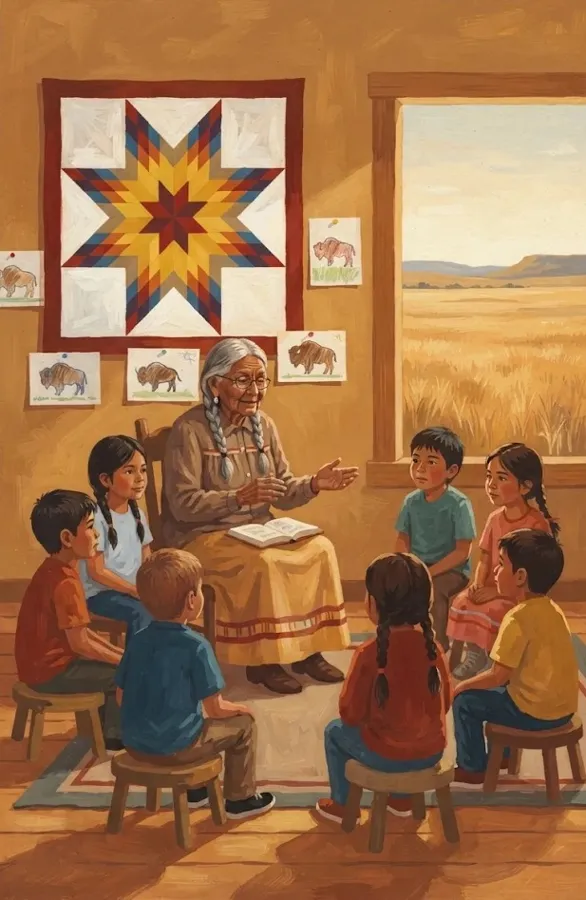
Y ha vuelto el bisonte. Hoy hay en los Estados Unidos y Canadá unos seiscientos sesenta mil bisontes, casi todos en ranchos. Más de ochenta naciones indias se han unido en un consejo para devolver el bisonte a sus tierras, y entre todas gestionan ya manadas de decenas de miles de animales. En las praderas de Pine Ridge, de Rosebud o de los pies negros de Montana, los niños vuelven a ver pasar a los animales que sus antepasados consideraban parientes.
No es el mundo de antes, ni volverá a serlo. Pero los señores de las llanuras siguen allí.